СП 269.1325800.2016 «Транспортные сооружения в сейсмических районах. Правила уто»
О документе: разработчики, утверждение, регистрация, ключевые слова
СВОД ПРАВИЛ
СП 269.1325800.2016
Издание официальное
Москва 2016
СП 269.1325800.2016
1 ИСПОЛНИТЕЛЬ -Общество с ограниченной ответственностью «Проектирование, обследования, испытания строительных конструкций» (ООО «ПОИСК»)
2 ВНЕСЕН Техническим комитетом по стандартизации ТК 465 «Строительство»
3 ПОДГОТОВЛЕН к утверждению Департаментом градостроительной деятельности и архитектуры Министерства строительства и жилищнокоммунального хозяйства Российской Федерации (Минстрой России)
4 УТВЕРЖДЕН приказом Министерства строительства и жилищнокоммунального хозяйства Российской Федерации от 16 декабря 2016 г. № 961/пр и введен в действие с 17 июня 2017 г.
5 ЗАРЕГИСТРИРОВАН Федеральным агентством по техническому регулированию и метрологии (Росстандарт)
В случае пересмотра (замены) или отмены настоящего свода правил соответствующее уведомление будет опубликовано в установленном порядке. Соответствующая информация, уведомление и тексты размещаются также в информационной системе общего пользования - на официальном сайте разработчика (Минстрой России) в сети Интернет
© Минстрой России, 2016
Настоящий нормативный документ не может быть полностью или частично воспроизведен, тиражирован и распространен в качестве официального издания на территории Российской Федерации без разрешения Минстроя России
СП 269.1325800.2016
Дата введения -2017-06-17
УДК [69+699.841] ОКС 93.040, 93.060, 93.080, 93.100, 93.120, 93.140
Ключевые слова: транспортные сооружения, сейсмические районы, правила, уточнение исходной сейсмичности, сейсмическое микрорайонирование
Руководитель организации-разработчика
| __________ООО «ПОИСК»____________ наименование организации _ген. директор__ должность | ________________ личная подпись | _ В.Г.Шестоперов _ инициалы, фамилия |
|---|---|---|
| разработки зам. ген. директора должность | ________________ личная подпись | _ Г.С.Шестоперов _ инициалы, фамилия |
| Исполнитель ___инженер____ должность | ________________ личная подпись | _ С.Г.Шестоперов _ инициалы, фамилия |
Введение
6 ВВЕДЕН ВПЕРВЫЕ
Настоящий свод правил разработан в соответствии с требованиями федеральных законов от 27 декабря 2002 г. № 184-ФЗ «О техническом регулировании», от 30 декабря 2009 г. № 384-ФЗ «Технический регламент о безопасности зданий и сооружений» и от 29 июня 2015 г. № 162-ФЗ «О стандартизации в Российской Федерации».
Работа выполнена ООО «ПОИСК» (д-р геол.-мин. наук, проф. Г.С. Шестоперов , инж. С.Г. Шестоперов ). При разработке настоящего свода правил были использованы материалы работ по уточнению исходной сейсмичности и сейсмическому микрорайонированию участков строительства транспортных объектов, выполнявшихся ИФЗ РАН (д-р физ.-мат. наук, проф. В.И. Уломов , д-р геол.-мин. наук, проф. Е.А. Рогожин ), центром «Наука» СО РАН (канд. техн. наук С.А. Перетокин ), ОАО «Фундаментпроект» (инж. К.А. Костенко , инж. А.В. Хилько ), ИЗК СО РАН (д-р геол.-мин. наук В.И. Джурик ).
1Область применения
Настоящий свод правил устанавливает правила проведения работ по уточнению исходной сейсмичности (УИС) и сейсмическому микрорайонированию (СМР) при изысканиях участков нового строительства, реконструкции, капитального ремонта и восстановления транспортных объектов, включая транспортные здания, в сейсмических районах.
Настоящий свод правил не распространяется на УИС и СМР территорий городов и других населенных пунктов, промышленных, энергетических, гидротехнических и сельскохозяйственных сооружений, а также на сооружения высокоскоростного железнодорожного транспорта.
Примечания
1 Исходная сейсмичность определяется в баллах шкалы MSK-64 по картам общего сейсмического районирования Российской Федерации (приложение А СП 14.13330.2014).
2 Правила настоящего свода правил детализируют основные требования к уточнению исходной сейсмичности и сейсмическому микрорайонированию, изложенные в СП 47.13330.
\_\_\_\_\_\_\_\_\_\_\_\_\_\_\_\_\_\_\_\_\_\_\_\_\_\_\_\_\_\_\_\_\_\_\_\_\_\_\_\_\_\_\_\_\_\_\_\_\_\_\_\_\_\_\_\_\_\_\_\_\_\_\_\_\_\_\_\_\_\_\_\_\_\_\_\_\_
ТРАНСПОРТНЫЕ СООРУЖЕНИЯ В СЕЙСМИЧЕСКИХ РАЙОНАХ Правила уточнения исходной сейсмичности
и сейсмического микрорайонирования
Transport structures in seismic zones.
Rules for initial seismity detailing and seismic microzoning
2Нормативные ссылки
В настоящем своде правил использованы нормативные ссылки на следующие документы:
ГОСТ 25100-2011 Грунты. Классификация
СП 14.13330.2014 «СНиП II-7-81* Строительство в сейсмических районах» (с изменением № 1)
СП 22.13330.2011 «СНиП 2.02.01-83* Основания зданий и сооружений»
СП 24.13330.2011 «СНиП 2.02.03-85 Свайные фундаменты»
СП 34.13330.2012 «СНиП 2.05.02-85* Автомобильные дороги»
СП 35.13330.2011 «СНиП 2.05.03-84* Мосты и трубы»
СП 47.13330.2012 «СНиП 11-02-96 Инженерные изыскания для строительства.
Основные положения»
СП 119.13330.2012 «СНиП 32-01-95 Железные дороги колеи 1520 мм»
Примечание - При пользовании настоящим сводом правил целесообразно проверить действие ссылочных документов в информационной системе общего пользования - на официальном сайте федерального органа исполнительной власти в сфере стандартизации в сети Интернет или по ежегодному информационному указателю «Национальные стандарты», который опубликован по состоянию на 1 января текущего года, и по выпускам ежемесячного информационного указателя «Национальные стандарты» за текущий год. Если заменен ссылочный документ, на который дана недатированная ссылка, то рекомендуется использовать действующую версию этого документа с учетом всех внесенных в данную версию изменений. Если заменен ссылочный документ, на который дана датированная ссылка, то рекомендуется использовать версию этого документа с указанным выше годом утверждения (принятия). Если после утверждения настоящего свода правил в ссылочный документ, на который дана датированная ссылка, внесено изменение, затрагивающее положение, на которое дана ссылка, то это положение рекомендуется применять без учета данного изменения. Если ссылочный документ отменен без замены, то положение, в котором дана ссылка на него, рекомендуется применять в части, не затрагивающей эту ссылку. Сведения о действии сводов правил целесообразно проверить в Федеральном информационном фонде стандартов.
3Термины и определения
В настоящем своде правил применены следующие термины с соответствующими определениями:
- 3.1активный разлом
- Разлом земной коры или всей литосферы, по которому за последние 10 000 лет происходили смещения горных пород или возникали очаги землетрясений.
- 3.2амплитуда разрыва
- Величина относительного смещения в плоскости разрыва двух смежных точек, находящихся на противоположных крыльях разлома.
- 3.3амплитудная характеристика сейсмического воздействия
- Расчетная амплитуда сейсмических ускорений (скоростей, перемещений) грунта, принимаемая при проектировании сооружений.
- 3.4балл шкалы MSK-64
- Мера опасности землетрясения, определяемая по реакции людей и животных, изменениям земной поверхности, показаниям сейсмометрических приборов, тяжести повреждений некоторых типов зданий и сооружений пониженной сейсмостойкости.
- 3.5взброс
- Разрыв со смещением висячего крыла разлома вверх по плоскости разрыва.
- 3.6водно-песчаные потоки
- Потоки донных отложений, образующиеся на подводных склонах при землетрясении. Могут возникать также на береговых склонах рек, озер, водохранилищ, сложенных слабыми водонасыщенными песками.
- 3.7гипоцентр землетрясения
- Начальная точка разрыва горных пород, завершающегося образованием (обновлением) тектонического разлома.
- 3.8зона дробления
- Дезинтегрированный массив горных пород, расположенных между крыльями разлома.
- 3.9исходная (нормативная) сейсмичность
- Опасность землетрясения в целых баллах шкалы MSK-64, определяемая по нормативным картам общего сейсмического районирования в зависимости от требований, предъявляемых к сейсмостойкости сооружений (объектов классов сейсмостойкости I, II и III).
- 3.10категория грунта по сейсмическим свойствам
- Характеристика расчетной толщи грунта, в зависимости от которой устанавливается огибающая нормализованных спектров сейсмического воздействия на сооружение (коэффициент динамичности).
- 3.11класс сейсмостойкости
- Системная (таксонометрическая) единица, позволяющая упорядочить множество сооружений по свойству выдерживать без разрушения землетрясения, повторяющиеся с различной вероятностью в месте расположения объекта. Примечание -Транспортные сооружения по сейсмостойкости подразделяются на три класса с допустимым при проектировании сейсмическим риском (вероятностью превышения силы расчетного землетрясения за интервал времени 50 лет) 10 %, 5 % и от 2,5 % до 1 % для сооружений классов сейсмостойкости III, II и I соответственно. Принятым значениям риска соответствуют сейсмические события, повторяющиеся в среднем с интервалом времени 500, 1000 и от 2000 до 5000 лет. Отнесение сооружений к классам сейсмостойкости выполняется согласно правилам проектирования транспортных сооружений в сейсмических районах.
- 3.12линия (след) разлома
- Линия пересечения земной поверхности плоскостью разрыва.
- 3.13магнитуда
- Мера землетрясения, характеризующая в неявной форме энергию, выделившуюся при землетрясении в виде сейсмических волн.
- 3.14общее сейсмическое районирование
- Процедура выделения на территории страны методом вероятностного анализа сейсмической опасности (ВАСО) зон сейсмичностью 6, 7, 8, 9 и 10 баллов по шкале MSK-64.
- 3.15очаг землетрясения
- Область разрыва земной коры, сопровождаемого быстрой подвижкой контактирующих горных пород.
- 3.16разлом
- Разрывное нарушение в земной коре, образовавшееся в процессе тектонических деформаций горных пород.
- 3.17сброс
- Разрыв со смещением висячего крыла разлома вниз по плоскости разрыва.
- 3.18сбросо-сдвиг
- Разрыв, включающий в себя сбросовую и сдвиговую составляющие относительного смещения крыльев разлома.
- 3.19сдвиг
- Разрыв с относительным смещением крыльев разлома в направлении его простирания.
- 3.20сейсмическая жесткость грунта
- Произведение плотности грунта на скорость распространения в слое сейсмических волн.
- 3.21сейсмические волны
- Колебательный процесс распространения быстрых изменений напряженно-деформированного состояния земной коры или всей литосферы из очага землетрясения на сопредельные участки недр и земной поверхности.
- 3.22сейсмическое микрорайонирование; СМР
- Комплекс инженерногеологических и инженерно-сейсмологических работ, имеющих целью выделение на территории строительного объекта микрозон, существенно различающихся по сейсмической опасности.
- 3.23сейсмичность строительной площадки (участка)
- Опасность землетрясения на данном участке, определяемая с учетом класса сейсмостойкости размещаемого на участке объекта, а также коррекции исходной сейсмичности за счет сейсмического режима в пункте строительства, местных инженерногеологических и геоморфологических условий.
- 3.24сейсмодислокации
- Изменения земной поверхности, возникающие при землетрясениях. Различают сейсмотектонические (разрывы земной поверхности, поднятия, опускания, горизонтальные перемещения участков земной коры), сейсмогравитационные (оползни, обвалы, сели, лавины, водно-песчаные потоки, грифоны) и вибрационные (вертикальные разрывы и остаточные перемещения в грунте, вызванные распространением сейсмических волн). По времени возникновения различают современные (за последние несколько сотен лет), голоценовые (за последние 10 000 лет) и более древние палеосейсмодислокации.
- 3.25спектральная характеристика сейсмического воздействия на сооружение
- Спектр наибольших ускорений осциллятора, соответствующий данному землетрясению, или огибающая спектров наибольших ускорений осциллятора, характеризующая возможное воздействие на сооружение совокупности многих землетрясений. Спектры, построенные для относительных наибольших ускорений осциллятора, измеренных в долях наибольших ускорений колебаний грунта, называются нормализованными.
- 3.26средние по сейсмическим свойствам грунты
- Покровные отложения, сейсмическая жесткость которых (произведение плотности грунта на скорость поперечных сейсмических волн) близка к 655 т/(м² ·с).
- 3.27тектоническое землетрясение
- Колебания грунта, вызванные упругой отдачей горных пород при их разрыве в процессе тектонических деформаций земной коры. 3.28 уравнение макросейсмического поля: Математическое выражение, позволяющее приближенно определить силу землетрясения в известном пункте равнинной местности для участков, сложенных средними по сейсмическим свойствам грунтами, по магнитуде землетрясения, глубине очага, эпицентральному расстоянию и эмпирическим коэффициентам. 3.29 уравнение метода сейсмических жесткостей: Математическое выражение, позволяющее определить приращение сейсмичности площадки за счет местных инженерно-геологических условий по сейсмической жесткости исследуемого грунта. 3.30 уравнение сейсмического режима: Математическое соотношение между силой землетрясения по шкале MSK-64 и средним промежутком времени в годах между землетрясениями этой силы в месте строительства. 3.31 уточнение исходной сейсмичности; УИС: Процедура корректировки сейсмической опасности, установленной картами ОСР, на основании уточненных данных о сейсмотектонической обстановке в районе строительства и расчета сейсмического режима (повторяемости землетрясений) в данном пункте. 3.32 шкала MSK-64: Сейсмическая шкала, служащая для оценки в баллах опасности землетрясений в зависимости от реакции людей и животных, тяжести повреждений некоторых типов зданий и других эффектов колебаний грунта. 3.33 эпицентр: Точка на земной поверхности, расположенная над гипоцентром. Расстояние между известным пунктом и
- 3.34эпицентральное расстояние
- эпицентром землетрясения.
4Основные положения
- изучение материалов ранее выполненных исследований по инженерной сейсмологии, сейсмотектонике и сейсмичности района, а также данных общих инженерно-геологических изысканий и аэрокосмического зондирования участка строительства;
- визуальные сейсмотектонические и макросейсмические обследования на участке строительства и прилегающей территории;
- геологические, геодезические, геофизические и геохимические работы;
- сейсмический мониторинг с помощью сети временных сейсмостанций;
- комплексный анализ всей совокупности полученных данных, оформленный в виде сводного отчета, содержащего значение уточненной сейсмичности района строительства, карту (схему) сейсмического микрорайонирования участка строительства, рекомендуемые амплитудные и спектральные характеристики сейсмического воздействия на сооружение.
Примечание - При изысканиях объектов классов сейсмостойкости II и III полевые методы исследований, включая сейсморазведку, применяются в случаях, перечисленных в 6.21.
5Уточнение исходной сейсмичности района строительства
При определении исходной сейсмичности объектов классов сейсмостойкости I, II, III следует использовать карты ОСР-2015-С, ОСР-2015-В, ОСР-2015-А исходя из обеспечения вероятности непревышения силы расчетного землетрясения 99 %, 95 %, 90 % за интервал времени 50 лет или математического ожидания интервала времени между толчками расчетной силы 5000, 1000 и 500 лет соответственно.
Примечание - К средним по сейсмическим свойствам грунтам относятся песчаноглинистые отложения с сейсмической жесткостью ρ𝑉 𝑆 = 655 т/(м² ·с), где ρ - нормативная плотность грунта, т/м³ ; 𝑉𝑆 - скорость поперечных сейсмических волн в грунте, м/с.
При отсутствии достаточных данных об изменчивости исследуемых характеристик в имеющейся выборке для определения нормативных значений ускорения, скорости и перемещения грунта допускается использовать таблицу 5.1.
Таблица 5.1 - Характеристики колебаний грунта при землетрясениях
| Интенсивность сейсмического воздействия, баллы | Ускорение, см/с 2 | Скорость, см/с | Перемещение, см |
|---|---|---|---|
| 7 | 100 | 8,0 | 4,0 |
| 8 | 200 | 16,0 | 8,0 |
| 9 | 400 | 32,0 | 16,0 |
| 10 | 800 | 64,0 | 32,0 |
где 𝑎, 𝑏 - эмпирические коэффициенты уравнения сейсмического режима;
𝑇 -средний промежуток времени, измеряемый в годах, между землетрясениями силой 𝐼 в месте строительства.
где 𝑀max - наибольшая магнитуда землетрясений, возникавших в рассматриваемой зоне разломов за последние 10 000 лет;
Δ - расстояние от эпицентра до сооружения, км; hср - средневзвешенная глубина очага, км; 𝑏, 𝑠, 𝑐 - коэффициенты уравнения макросейсмического поля, в среднем принимаемые 𝑏 = 1,5 ; 𝑠 = 3,5 ; 𝑐 = 3,0 .
Примечания
1 Коэффициенты 𝑏, 𝑠, 𝑐 допускается уточнять по приложению Б или по данным региональных сейсмотектонических исследований.
- 2 Форму изосейст и силу землетрясения вблизи эпицентра рекомендуется уточнять с привлечением региональных сейсмологических организаций.
где 𝐼 2000 - сила землетрясений, повторяющихся в среднем на участке сооружения один раз за 2000 лет;
𝐼 3000 - сила землетрясений, повторяющихся там же в среднем один раз за 3000 лет.
Примечания
1 По предложению проектной организации, согласованному с заказчиком объекта, верхний предел неравенства (5.3) для транспортных переходов через морские проливы и заливы, тоннели и станции метрополитенов и другие подобные сооружения может быть увеличен до 𝐼 5000 , т. е. до силы землетрясений, повторяющихся в среднем на участке сооружения один раз за 5000 лет.
2 В тех случаях, когда условие (5.3) нарушается, т. е. если 𝐼max < 𝐼2000 или 𝐼max > 𝐼3000 ( I 5000) в качестве уточненной сейсмичности района строительства 𝐼 ут принимаются 𝐼 2000 или 𝐼 3000 (𝐼 5000 ) соответственно.
6Сейсмическое микрорайонирование
- сейсмических сил, сдвигающих покровные отложения относительно ложа оползня и уменьшающих давление на поверхность сдвига от собственного веса оползневого тела;
- сил гидростатического взвешивания, действующих ниже уровня воды в грунте;
- изменения физико-механических свойств грунта (угла внутреннего трения, сцепления, модулей деформации при сдвиге и сжатии) при сейсмическом воздействии;
- кратковременности действия сейсмических сил.
где ρ - нормативная плотность слоя грунта, т/м³ ;
𝑉 𝑆 - скорость S -волн в слое грунта, м/с.
где μ - коэффициент Пуассона;
𝐺 - модуль деформации при сдвиге, тс/м² .
- 0,3 - для скальных грунтов;
- 0,4 - для полускальных грунтов;
- 0,45 - для крупнообломочных и песчано-глинистых грунтов.
Примечание - При изысканиях сооружений класса сейсмостойкости I коэффициент Пуассона μ рекомендуется уточнять по данным сейсморазведки.
где 𝑉 𝑆 - скорость поперечных волн, м/с.
Примечания
1 При расчетной сейсмичности, отличающейся от целочисленных значений балльности, коэффициент условий работы 𝑚𝑐 находят с помощью линейной интерполяции.
2 При расчетной сейсмичности 9 баллов коэффициент 𝑚𝑐 для глинистых грунтов при показателе текучести 0,75 ≤ 𝐼 𝐿 < 1 принимается равным 0,55.
- сложения верхней толщи инженерно-геологического разреза слоями крайне слабых грунтов (торфа, ила, текучих и текучепластичных супесей, суглинков и глин, рыхлых песков), требующее их замены или укрепления с оценкой влияния изменения геологической среды на сейсмичность участка строительства;
- наличия в разрезе линз погребенных слабых грунтов, в том числе таликов в мерзлой толще, а также карстовых пустот, заполненных слабыми грунтами;
- большой мощности аллювиальных и морских отложений в устьях рек, в морских проливах и заливах;
- особо сложных инженерно-геологических условий, встречающихся на участках меандрирующих рек с поймами, выполненными крайне слабыми отложениями, залегающими на неровной кровле консолидированных отложений, изрезанной палеоруслами блуждающей реки;
- присутствия на участке строительства дислокаций сейсмотектонического и сейсмогравитационного генезиса;
- падения в сторону тальвега пластов глинистых грунтов и коренной породы типа аргиллита, способствующего потере устойчивости покровных отложений на склонах долин и берегах проливов при землетрясениях;
- возможности оптимизировать антисейсмические мероприятия по критериям надежности и стоимости за счет применения геофизических методов исследования сейсмичности строительных площадок;
- возможности использования при СМР данных сейсморазведки прошлых лет, выполненной на исследуемой территории или в аналогичных инженерногеологических условиях на прилегающих участках местности.
Примечание - На участках распространения многолетнемерзлых грунтов мощность деятельного слоя следует принимать от поверхности грунта до уровня нормативной глубины сезонного оттаивания мерзлых грунтов.
где ρ𝑉 𝑆 - сейсмическая жесткость грунта расчетной толщи, т/(м² ·с); ρ - нормативная плотность грунта, т/м³ ;
𝑉 𝑆 - скорость поперечных сейсмических волн в расчетной толще, м/с.
Примечание - Модуль δ𝐼гр не должен превышать 1,0.
где δ𝑖 - толщина i -го слоя пачки, м; ρ𝑖 𝑉 𝑆𝑖 - сейсмическая жесткость i -го слоя пачки относительно поперечных сейсмических волн, т/(м² ·с).
Примечание - При определении скоростей S -волн по данным сейсморазведки следует вводить поправку на нелинейность деформаций грунта по 6.42.
где 𝑉 𝑆 - скорость поперечных волн, м/с;
𝑅0 ≤ 1000 тс/м² - условное сопротивление грунта сжатию, тс/м² .
Примечание - Величину 𝑅0 находят с использованием линейной интерполяции между 𝑅0 и физическими характеристиками грунта по приложению Д.
где h - средняя глубина залегания слоя от поверхности грунта.
При глубине залегания слоя h ≥ 100 м коэффициент 𝐾h = 2,5 . Для промежуточных значений h коэффициент 𝐾h находят по интерполяции.
Примечания
1 При определении скоростей S -волн в слоях, сложенных грунтами категории III по сейсмическим свойствам, следует учитывать уменьшение скоростей волн за счет нелинейности деформаций грунта посредством умножения скоростей на поправочные множители 0,9; 0,8; 0,7 и 0,6 при исходной сейсмичности 7, 8, 9 и 10 баллов соответственно.
2 Для насыщенных водой песков и гравийно-галечниковых отложений с песчаноглинистым заполнителем скорость 𝑉𝑆 дополнительно умножается на коэффициенты 0,8 для песков и 0,9 для гравийно-галечниковых отложений.
Примечание -Значения β𝑖 в таблице 6.1 соответствуют относительному коэффициенту затухания в размере 5 % критического значения, при котором гармоническое колебательное движение массы осциллятора переходит в апериодическое движение. Предполагается также, что колебания грунта содержат низкочастотные составляющие, характерные для излучения волн из глубоких и удаленных высокомагнитудных очагов землетрясений, а также в случае влияния на спектр большой мощности покровных отложений на участке строительства.
Таблица 6.1
| Категория расчетной толщи грунта по сейсмичес- ким свойствам | Сейсмичес- кая жесткость расчетной толщи грунта ρ𝑉 𝑆 , т/(м² ·с) | Нормализованные спектры расчетного сейсмического воздействия на сооружение β 𝑖 |
|---|---|---|
| I | Более 2570 | β 𝑖 = 1+15𝑇 𝑖 при 𝑇 𝑖 ≤ 0,1 с β 𝑖 = 2,5 при 0,1 с < 𝑇 𝑖 ≤ 0,3 с β 𝑖 = 0,75 𝑇 𝑖 , но не менее 1,0 при 0,3 с < 𝑇 𝑖 ≤ 1,8 с |
| II | От 655 до 2570 | β 𝑖 = 1+15𝑇 𝑖 при 𝑇 𝑖 ≤ 0,1 с β 𝑖 = 2,5 при 0,1 с < 𝑇 𝑖 ≤ 0,5 с β 𝑖 = 1,25 𝑇 𝑖 , но не менее 1,0 при 0,5 с < 𝑇 𝑖 ≤ 1,8 с |
| III | Менее 655 | β 𝑖 = 1+15𝑇 𝑖 при 𝑇 𝑖 ≤ 0,1 с β 𝑖 = 2,5 при 0,1 с < 𝑇 𝑖 ≤ 0,7 с β 𝑖 = 1,75 𝑇 𝑖 , но не менее 1,0 при 0,7 с < 𝑇 𝑖 ≤ 1,8 с |
СП 269.1325800.2016 местных инженерно-геологических условий, а также поправки на рельеф участка строительства по 6.44.
АПриложение А. (справочное)
Дробный балл сейсмической опасности как мера интенсивности колебаний грунта при землетрясениях
Исходная сейсмичность на картах общего сейсмического районирования задается в целых баллах сейсмической шкалы MSK-64. При УИС и СМР приращение сейсмической опасности получают, как правило, в десятичных долях целого балла. В результате выполнения УИС и СМР сила расчетного землетрясения отличается от целых чисел. В связи с этим необходимо установить понятие дробного балла сейсмической опасности как меры интенсивности колебаний грунта при землетрясениях.
На основе анализа акселерограмм сильных и разрушительных землетрясений были получены различные эмпирические зависимости между ускорениями колебаний грунта и силой землетрясения, описываемые формулой
где 𝑊 - ускорение колебаний грунта, см/с 2 ;
𝐼 - сила землетрясения, баллы; 𝑘, 𝑐 - эмпирические коэффициенты.
Установлены следующие значения для коэффициентов формулы (А.1): 𝑘 = 0,3 ; 𝑐 = 0,1 . Следовательно, для землетрясений силой 7, 8, 9 и 10 баллов ускорения колебаний грунтов будут соответственно равны: 100, 199, 398 и 794 см/с 2 . Эти значения ускорений от 7 до 9 баллов близки к средним значениям выборок максимальных ускорений при толчках соответствующей силы. Дополненная с учетом амплитуды перемещений инструментальная часть шкалы MSK-64 приведена в таблице А.1.
Таблица А.1 Параметры колебаний среднего по сейсмическим свойствам грунта при землетрясениях силой 7-10 баллов
| Сила | Интервальные значения | Интервальные значения | Интервальные значения |
|---|---|---|---|
| землетрясения, баллы | ускорения, см/с 2 | скорости, см/с | перемещения, см |
| 7 | 50-100 | 4,1-8,0 | 2,1-4,0 |
| 8 | 100-200 | 8,1-16,0 | 4,1-8,0 |
| 9 | 200-400 | 16,1-32,0 | 8,1-16,0 |
| 10 | 400-800 | 32,1-64,0 | 16,1-32,0 |
В СП 14.13330 ускорения грунта в основаниях сооружений, соответствующие расчетному землетрясению, принимаются равными 100, 200 и 400 см/с 2 в районах сейсмичностью 7, 8 и 9 баллов (при средних грунтовых условиях). В СП 14.13330 не регламентированы ускорения колебаний грунта при 10-балльных землетрясениях, а также отсутствуют данные о скоростях колебаний и перемещениях грунта при землетрясениях силой от 7 до 10 баллов.
Графики зависимостей (рисунок А.1) между силой землетрясения 𝐼 и ускорением колебаний грунта 𝑊 по экспериментальным данным (непрерывная функция), при составлении шкалы MSK-64 (ступенчатая функция) и разработке строительных норм и правил (дискретная функция, показанная на рисунке точками) существенно отличаются.
Рисунок А.1 -Зависимости между ускорением колебаний грунта и силой землетрясения по экспериментальным данным (а), по шкале MSK-64 (б) и по строительным нормам и правилам (в)
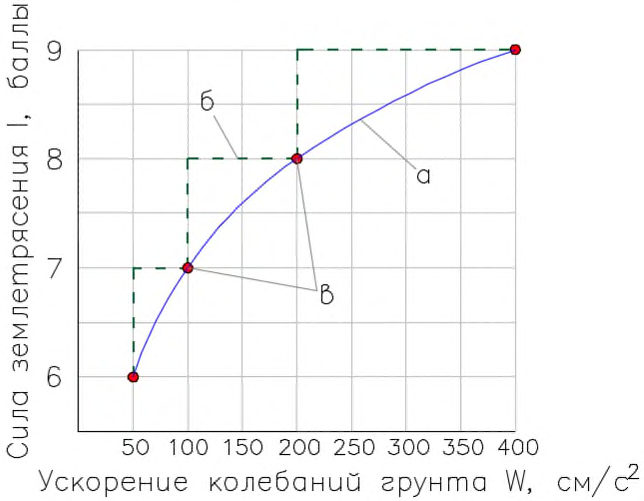
Особенность представления искомой зависимости 𝐼 = 𝑓(𝑊) ступенчатой функцией, принятой в шкале MSK-64, состоит в том, что вблизи граничных значений ускорения 50, 100, 200 и 400 см/с 2 опасность землетрясений уменьшается или увеличивается сразу на один балл при самых незначительных изменениях ускорения.
В случае применения дискретной функции (рисунок А.1, в) ускорения на всей территории каждой из зон сейсмичностью 7, 8 и 9 баллов получаются одинаковыми, т. е. равными 100, 200 и 400 см/с 2 , хотя в действительности ускорения вблизи границ смежных зон должны быть близки и не зависеть от того, в какой зоне измеряется ускорение.
Замена ступенчатой и дискретной функций непрерывной зависимостью соответствует наблюдаемому увеличению степени повреждений конструкций по мере роста ускорений колебаний грунта. Использование непрерывной зависимости силы землетрясения от ускорения колебаний грунта позволяет избежать необоснованного занижения сейсмической опасности в одних случаях и перерасхода средств на антисейсмические мероприятия в других случаях. Близкий эффект получается в случае представления искомой зависимости 𝐼 = 𝑓(𝑊) ступенчатой функцией с малым шагом по балльности.
Формула (А.1) задает зависимость ускорения грунта 𝑊 от силы землетрясения 𝐼 в виде геометрической прогрессии (при целых значениях 𝐼 ) или в виде показательной функции (при любом 𝐼 ). Так, из формулы (А.1) следует, что 𝑊=10 𝑘𝐼-𝑐 и отношение ускорений при толчках силой 𝐼 + 1 и 𝐼 равно 𝑊𝐼+1 𝑊𝐼 = 10 𝑘(𝐼+1)-𝑐 10 𝑘𝐼-𝑐 = 10 𝑘 , т. е. ускорения образуют геометрическую прогрессию со знаменателем 10 𝑘 , где 𝑘 = 0,3, и последовательность ускорений имеет знаменатель 𝑞 = 10 0,3 ≅ 2,0 .
Каноническая форма общего члена геометрической прогрессии (А.1) имеет вид
где 𝑎1 - первый член прогрессии; 𝑎𝑖 -𝑖 -й член прогрессии; 𝑞 - знаменатель прогрессии.
В качестве первого члена прогрессии принимают 𝑊=100 см/с 2 , т. е. ускорение, соответствующее толчку силой 7 баллов. Общий член ряда (прогрессии) определяют по формуле 𝑊7+∆𝐼 = 100 ∙ 2 ∆𝐼 , (А.2) где ∆𝐼 - приращение балльности по отношению к исходному (седьмому) баллу.
С помощью формулы (А.2) определяют значения ускорений колебаний грунта в диапазоне балльности от 7 до 10 баллов с шагом 0,1 балла (таблицы А.2-А.4). Подобным образом можно определить скорости и перемещения при колебаниях грунта в том же диапазоне балльности.
Таблица А.2 Параметры колебаний грунта при силе землетрясения, выраженной в долях целого балла ( 𝟕, 𝟎 ≤ 𝑰 ≤ 𝟕, 𝟗 )
| Сила землетрясения, баллы | Расчетные параметры горизонтальных колебаний грунта | Расчетные параметры горизонтальных колебаний грунта | Расчетные параметры горизонтальных колебаний грунта |
|---|---|---|---|
| Сила землетрясения, баллы | Перемещение U , см | Скорость V , см/с | Ускорение W , см/с 2 |
| 7,0 | 4,0-4,3 | 8,0-8,6 | 100-107 |
| 7,1 | 4,3-4,6 | 8,6-9,2 | 107-115 |
| 7,2 | 4,6-4,9 | 9,2-9,8 | 115-123 |
| 7,3 | 4,9-5,3 | 9,8-10,6 | 123-132 |
| 7,4 | 5,3-5,7 | 10,6-11,3 | 132-141 |
| 7,5 | 5,7-6,1 | 11,3-12,1 | 141-152 |
СП 269.1325800.2016
| 7,6 | 6,1-6,5 | 12,1-13,0 | 152-162 |
|---|---|---|---|
| 7,7 | 6,5-7,0 | 13,0-13,9 | 162-174 |
| 7,8 | 7,0-7,5 | 13,9-14,9 | 174-187 |
| 7,9 | 7,5-8,0 | 14,9-16,0 | 187-200 |
Таблица А.3 Параметры колебаний грунта при силе землетрясения, выраженной в долях целого балла (8 , 𝟎 ≤ 𝑰 ≤ 𝟖, 𝟗 )
| Сила землетрясения, баллы | Расчетные параметры горизонтальных колебаний грунта | Расчетные параметры горизонтальных колебаний грунта | Расчетные параметры горизонтальных колебаний грунта |
|---|---|---|---|
| Сила землетрясения, баллы | Перемещение U , см | Скорость V , см/с | Ускорение W , см/с 2 |
| 8,0 | 8,0-8,6 | 16,0-17,1 | 200-214 |
| 8,1 | 8,6-9,2 | 17,1-18,4 | 214-230 |
| 8,2 | 9,2-9,8 | 18,4-19,7 | 230-246 |
| 8,3 | 9,8-10,6 | 19,7-21,1 | 246-264 |
| 8,4 | 10,6-11,3 | 21,1-22,6 | 264-283 |
| 8,5 | 11,3-12,1 | 22,6-24,3 | 283-303 |
| 8,6 | 12,1-13,0 | 24,3-26,0 | 303-325 |
| 8,7 | 13,0-13,9 | 26,0-27,9 | 325-348 |
| 8,8 | 13,9-14,9 | 27,9-29,9 | 348-373 |
| 8,9 | 14,9-16,0 | 29,9-32,0 | 373-400 |
Таблица А.4 Параметры колебаний грунта при силе землетрясения, выраженной в долях целого балла (9 , 𝟎 ≤ 𝑰 ≤ 𝟗, 𝟗 )
| Сила землетрясения, баллы | Расчетные параметры горизонтальных колебаний грунта | Расчетные параметры горизонтальных колебаний грунта | Расчетные параметры горизонтальных колебаний грунта |
|---|---|---|---|
| Сила землетрясения, баллы | Перемещение U , см | Скорость V , см/с | Ускорение W , см/с 2 |
| 9,0 | 16,0-17,1 | 32,0-34,3 | 400-429 |
| 9,1 | 17,1-18,4 | 34,3-36,8 | 429-460 |
| 9,2 | 18,4-19,7 | 36,8-39,4 | 460-492 |
| 9,3 | 19,7-21,1 | 39,4-42,2 | 492-528 |
| 9,4 | 21,1-22,6 | 42,2-45,3 | 528-566 |
| 9,5 | 22,6-24,3 | 45,3-48,5 | 566-606 |
| 9,6 | 24,3-26,0 | 48,5-51,9 | 606-650 |
| 9,7 | 26,0-27,9 | 51,9-55,7 | 650-696 |
| 9,8 | 27,9-29,9 | 55,7-59,7 | 696-746 |
|---|---|---|---|
| 9,9 | 29,9-32,0 | 59,7-64,0 | 746-800 |
Пример - Требуется уточнить ускорения колебаний среднего по сейсмическим свойствам грунта для участка эстакады, расположенной на расстоянии Δ 23 км от потенциального очага землетрясения. Максимальная магнитуда землетрясений 𝑀 = 6,8 . Средняя глубина очагов hср = 12 км.
Наибольшую силу сотрясений и среднего по сейсмическим свойствам грунта вблизи эстакады определяют по уравнению макросейсмического поля
где 𝑏 = 1,5 ; 𝑠 = 3,6 ; 𝑐 = 3,1 .
При подстановке в уравнение значений всех параметров находят 𝐼 = 8,2 балла. По таблице А.3 расчетное ускорение колебаний грунта 𝑊=246 см/с 2 . По шкале MSK-64 такому ускорению соответствует землетрясение силой 9 баллов, при котором нормативное ускорение следует принимать равным 400 см/с 2 . Таким образом, в рассматриваемом случае можно существенно уменьшить сейсмическую нагрузку за счет использования дробных баллов как меры интенсивности колебаний грунта.
БПриложение Б (справочное). Региональные коэффициенты уравнения макросейсмического поля
Таблица Б.1
| Сейсмоактивные | Коэффициенты уравнения макросейсмического поля | Коэффициенты уравнения макросейсмического поля | Коэффициенты уравнения макросейсмического поля |
|---|---|---|---|
| регионы и субрегионы | b | s | c |
| Крым | 1,5 | 3,5 | 3,0 |
| Нижняя Кубань | 1,5 | 3,5 | 3,0 |
| Таманский полуостров | 1,5 | 3,5 | 3,0 |
| Северный Кавказ | 1,6 | 3,1 | 2,2 |
| Дагестан | 1,5 | 3,6 | 3,1 |
| Алтай и Саяны | 1,5 | 3,5 | 3,0 |
| Прибайкалье | 1,5 | 4,0 | 4,0 |
| Якутия и Северо- восток Российской Федерации | 1,5 | 3,5 | 3,0 |
| Приморье и Приамурье | 1,5 | 3,5 | 3,0 |
| о. Сахалин | 1,6 | 4,3 | 3,3 |
| Курильские о-ва | 1,5 | 4,5 | 4,5 |
| п-ов Камчатка | 1,5 | 2,6 | 2,5 |
| п-ов Чукотка | 1,5 | 3,5 | 3,0 |
| Балтийский щит | 1,5 | 3,5 | 3,0 |
| Европейская часть Российской Федерации | 1,5 | 3,5 | 3,0 |
| Урал и Западная Сибирь | 1,5 | 3,5 | 3,0 |
ВПриложение В. (справочное) Уточнение исходной сейсмичности участка строительства железной и автомобильной дорог
В.1 Приведенные в настоящем приложении данные о комплексных исследованиях для уточнения сейсмической обстановки выполнялись при изысканиях железной дороги категории III по СП 119.13330 в Восточной Сибири. Длина исследованного участка дороги около 200 км. Перечень сооружений, для которых уточнена исходная сейсмичность, включает в себя 49 мостов на железной дороге и два моста на притрассовой автомобильной дороге.
Сооружения на железной дороге должны проектироваться с допустимым сейсмическим риском (вероятностью превышения расчетной сейсмической нагрузки) 5 % за 50 лет эксплуатации. Для мостов на притрассовой автомобильной дороге сейсмический риск установлен в размере 10 % за 50 лет эксплуатации.
Согласно карте ОСР-97-В 1) южная часть трассы железной дороги проходит в зоне сейсмичностью 9 баллов, северная - в зоне сейсмичностью 8 баллов. Примерно посредине трассы дорога пересекает границу упомянутых зон. При пересечении границы сейсмичность изменяется на один балл.
Для сооружений на притрассовой автомобильной дороге требования к их сейсмостойкости понижены. Согласно карте ОСР-97-А только начальный участок дороги длиной 30 км расположен в 9-балльной зоне. На остальном протяжении дорога проходит по 8-балльной зоне, переходя в 7-балльную зону вблизи конечного пункта трассы. При пересечении дорогой границ зон картированная сейсмическая опасность изменяется скачком на один балл.
Исходная сейсмичность, указанная на картах ОСР-97-А и ОСР-97-В, уточнялась расчетом по сетке с шагом 5×5 км с округлением силы сейсмического воздействия до 0,1 балла шкалы MSK-64. Положение зон очагов возможных землетрясений в районе проектируемой железной дороги и характеристики их сейсмической активности соответствовали методологии общего сейсмического районирования, основанной на данных о сейсмичности и сейсмическом режиме регионов Северной Евразии. Сейсмичность уточнялась для 20 пунктов, равномерно расположенных вдоль дорог.
\_\_\_\_\_\_\_\_\_\_\_\_\_\_\_\_\_\_\_\_\_\_\_\_\_\_
1) Приведенные в настоящем приложении комплексные исследования проводились до введения в действие карт общего сейсмического районирования ОСР-2015.
Расчеты по методике ВАСО показывают непрерывное изменение сейсмической опасности вдоль дорог без скачков на границе зон 7-, 8- и 9- балльной опасности по картам ОСР-97-А и ОСР-97-В. Наибольшие погрешности сейсмической опасности, указанной на картах ОСР-97-А и ОСР-97-В, соответствуют пунктам вблизи границ зон различной сейсмичности (рисунки В.1 и В.2).
В результате уточнения исходной сейсмичности определены поправки к сейсмической опасности на сейсмический режим местности для 51 мостового сооружения. Для трех объектов уточненная сейсмичность совпала с исходной по картам ОСР-97, для 15 мостов уточненная сейсмичность оказалась выше исходной, для 33 мостов возможно уменьшение исходной сейсмичности при использовании детализированных карт общего сейсмического районирования. Значение поправки на сейсмический режим изменялось в пределах от - 0,5 до 0,5 балла шкалы MSK-64.
Рисунок В.1 -Изменение сейсмической опасности вдоль трассы железной дороги (средний период повторения землетрясений Т = 1000 лет)
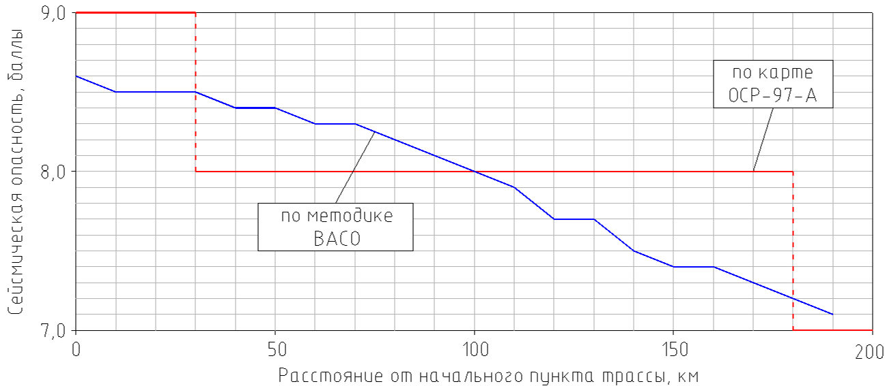
Рисунок В.2 -Изменение сейсмической опасности вдоль трассы автомобильной дороги (средний период повторения землетрясений Т = 500 лет)
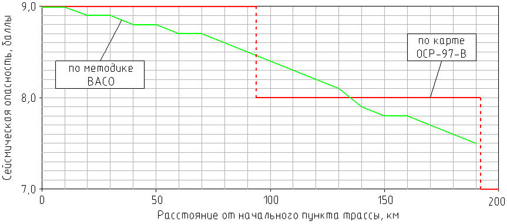
В.2 Использование при проектировании целых баллов, указанных на картах ОСР-97, без уточнения сейсмической опасности с учетом ее вариации вдоль трассы железной и автомобильной дорог способно привести в одних случаях к недооценке опасности землетрясений, в других - к ее переоценке. Применение детализированных карт сейсмической опасности с шагом изолиний 0,1 балла шкалы MSK-64 позволяет проектировать дороги в соответствии с требуемым уровнем их сейсмостойкости, исключая случаи необоснованного снижения надежности для одних сооружений и завышения стоимости других объектов.
В.3 Для 51 сооружения на железной и автомобильной дорогах выполнено СМР, учитывающее местные инженерно-геологические и геоморфологические условия. С учетом всех видов поправок (на сейсмический режим, грунтовые условия и рельеф участков мостовых переходов) сейсмичность повышена для 8, уменьшена для 40 и оставлена без изменения для трех объектов.
ГПриложение Г. (справочное)
Уточнение исходной сейсмичности и сейсмическое микрорайонирование места расположения лавинозащитной галереи
Г.1 Рассматриваемый объект расположен на горном участке железной дороги категории IV по СП 119.13330 в долине р. Нижний Ингамакит, т. е. находится в центральной части зоны активных Ингамакитских и Чина-Вакатских разломов. На флангах этой зоны землетрясения силой 9-10 баллов происходили в 1957 и 1967 гг. Центральная часть зоны характеризуется за последние 135 лет относительно слабой местной сейсмичностью, где за это время накопился значительный сейсмический потенциал (рисунок Г.1).
Рисунок Г.1 Сейсмичность и сейсмическая опасность в районе п. Чара Читинской области (с 1 марта 2008 г. - Забайкальский край)
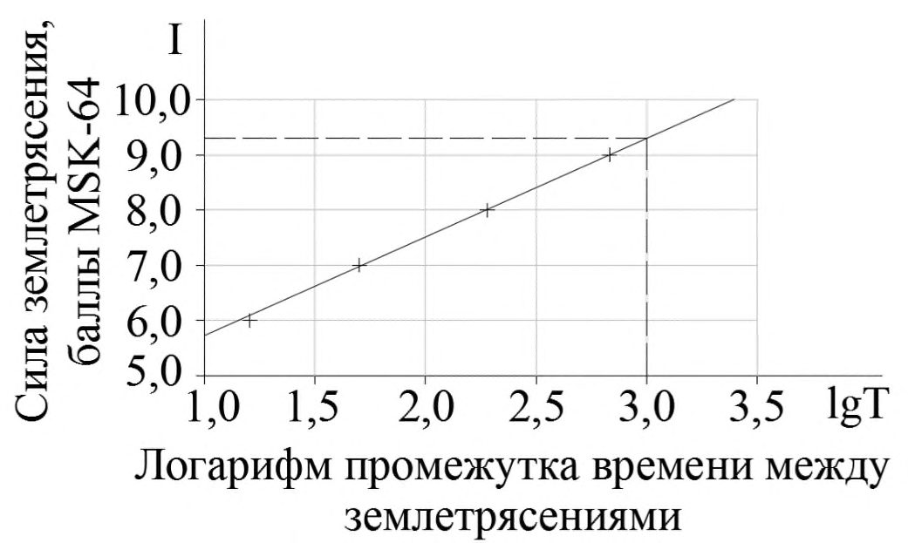
Галерея размещается на полке крутого склона. Свод галереи спроектирован из стальных гофрированных листов. Расстояние между осями фундаментов принято равным 7,68 м. Высота конструкции галереи от основной площадки до замка арки - 7,71 м, длина галереи - 38 м.
При проектировании объект рассматривался как сооружение класса сейсмостойкости II. Для определения исходной сейсмичности использовалась действовавшая на момент проведения работ по УИС и СМР карта ОСР-97-В, согласно которой сейсмичность района строительства I ис равна 9 баллов по шкале MSK-64.
Исходные данные для расчета поправки, учитывающей особенности сейсмического режима в месте расположения галереи, представлены в таблице Г.1.
Таблица Г.1
| Сила землетрясения 𝐼 𝑖 , баллы | 6 | 7 | 8 | 9 |
|---|---|---|---|---|
| Интервал времени между толчками по сейсмологическим данным 𝑇 𝑖 , годы | 16 | 50 | 190 | 680 |
| Десятичный логарифм времени 𝑇 𝑖 | 1,204 | 1,700 | 2,279 | 2,832 |
Среднее значение чисел в строке lg𝑇 𝑖 :
Уравнение сейсмического режима в пункте строительства:
Для определения коэффициентов α и β использованы формулы:
Подстановкой коэффициентов α и β в уравнение сейсмического режима получена формула для определения уточненной сейсмичности
График формулы (Г.2) показан на рисунке Г.2. Уточненная по формуле (Г.2) сейсмичность района строительства, соответствующая интервалу времени между толчками 𝑇 = 1000 лет или вероятности превышения расчетного сейсмического воздействия за 50 лет эксплуатации (сейсмическому риску) 5 % составляет
Приращение балльности при вероятностном способе оценки отклонения сейсмического режима от принятого при составлении карты ОСР-97-В 𝛿𝐼с.р = 𝐼ут -𝐼ис = 0,3 балла.
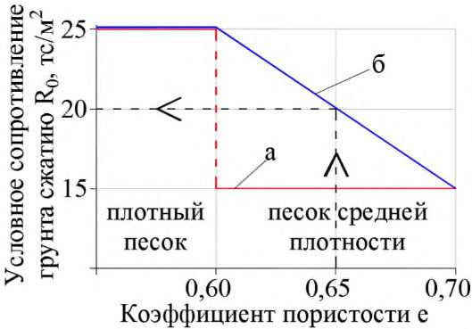
«+» - повторяемость землетрясений по сейсмологическим данным;
«-» - график сейсмического режима, построенный методом наименьших квадратов
Рисунок Г.2 -График сейсмического режима в верховьях р. Нижний Ингамакит
Г.2Влияние рельефа местности на интенсивность колебаний грунта в месте расположения галереи
Согласно топографической карте ширина долины по дну приближается к 500 м, поверху к 2000 м. Борта долины возвышаются над дном на 450-500 м. Средняя крутизна склонов 1:1,5. Отметка строительной площадки на 220 м превышает отметку дна долины, т. е. в месте расположения галереи трасса дороги проложена в средней части склона.
Характеристика формы поперечного сечения долины определена в зависимости от ширины долины поверху 𝐿 и глубины 𝐻 по формуле
Скорость поперечных сейсмических волн 𝑉𝑆 в коренной породе склонов равна 2050 м/с, период колебаний грунта 𝑇 = 0,3 с . Таким образом, длина волны λ для периода 𝑇 = 0,3 с составит λ = 𝑉 𝑆𝑇 = 2050 ∙ 0,3 = 615 м . Отношение 𝑥 длины волны λ к глубине долины 𝐻
Отношение амплитуд колебаний грунта на дне долины и на плоской горизонтальной площадке вне долины
Отношение амплитуд колебаний грунта в верхней части склонов и на плоской горизонтальной площадке вне долины
Искомый коэффициент, показывающий влияние рельефа на интенсивность колебаний склонов долины, изменяется линейно между найденными значениями 0,73 (на дне долины) и 1,13 (в верхней части склона). В уровне дороги коэффициент 𝐾р.м = 0,91 . Для меньших значений периода поперечной волны 0,2 и 0,1 с коэффициент 𝐾р.м уменьшается до 0,88 и 0,86 соответственно.
Г.3Влияние местных инженерно-геологических условий на сейсмичность площадки строительства галереи
В основании галереи залегают щебенисто-глыбовые грунты, оттаивающие в летний сезон на глубину 5 м ниже подошвы фундамента. По данным изысканий и сейсморазведки плотность верхнего слоя ρ1 = 2,0 тс/м³ , скорость S-волн 280 м/с. Ниже грунт находится в вечномерзлом состоянии, при котором скорость S-волн увеличивается до 1100 м/с.
Сейсмические жесткости верхнего и нижнего слоев расчетной толщи соответственно ρ1𝑉 𝑠1 = 560 т/(м² ·с) и ρ2𝑉 𝑠2 = 2200 т/(м² ·с). Средневзвешенная жесткость толщи ρ𝑉 𝑠 = ∑𝜌𝑖𝑉𝑠𝑖𝛿𝑖 ∑𝛿𝑖 = 560∙5+2200∙5 5+5 = 1380 тс/(м² ·с), т. е. толща относится к грунтам категории II по сейсмическим свойствам.
Приращение сейсмичности строительной площадки за счет грунтовых условий δ𝐼гр = 1,67lg ( 655 ρ𝑉 𝑠 ) = 1,67lg ( 655 1380 ) = -0,5 балла. Суммарная поправка на сейсмический режим и грунтовые условия δ𝐼с.р +δ𝐼гр = 0,3 - 0,5 = -0,2 балла.
Амплитуду колебаний грунта при землетрясении силой 8,8 балла по таблице А.3 приложения А принимают равной 14,9 см. С учетом поправки на рельеф местности 𝐾р.м = 0,91 амплитуда колебаний уменьшается до 13,5 см, что не выходит за границы интервала амплитуд колебаний грунта при толчках силой 8,8 балла.
ДПриложение Д (справочное). Определение условного сопротивления грунтов сжатию при сейсмическом микрорайонировании
Д.1Общие положения
Известные зависимости между модулем деформации глинистых грунтов, углом внутреннего трения песков, прочностью скальных грунтов при сжатии и скоростью S -волн не полностью охватывают разнообразные инженерно-геологические условия, встречающиеся при строительстве. В связи с этим при сейсмическом микрорайонировании участков транспортных сооружений используется универсальная зависимость.
Согласно СП 35.13330 расчетное сопротивление 𝑅 нескальных грунтов осевому сжатию рекомендуется определять в зависимости от условного сопротивления 𝑅0 грунта сжатию, размеров (меньшей стороны или диаметра) фундамента мелкого заложения или опускного колодца в плане, глубины заложения фундамента и удельного веса грунта выше его подошвы. Перечисленные исходные данные применяют также при определении сопротивления сжатию грунтов оснований фундаментов зданий и сооружений по СП 22.13330.
Расчетное сопротивление грунтов сжатию 𝑅 незначительно отличается от условного сопротивления 𝑅0 , так как поправки на размер фундамента и глубину его заложения обычно не превышают 10 % - 20 % от 𝑅 . Таким образом, расчетное сопротивление грунтов сжатию в основном определяется условным сопротивлением 𝑅0 , зависящим от физических свойств грунта.
Использование условного сопротивления 𝑅0 в качестве индикатора скорости распространения S -волн в грунте требует введения некоторых дополнений и изменений в методику, применяемую для вычисления 𝑅0 при статическом расчете оснований опор мостов на прочность. Приведенная ниже методика определения 𝑅0 применительно к задаче сейсмического микрорайонирования относится к участкам строительства транспортных сооружений, сложенных глинистыми, песчаными и крупнообломочными грунтами, а также скальными грунтами в зоне выветривания.
После определения при изысканиях условного сопротивления сжатию 𝑅0 грунтов расчетной толщи скорости 𝑉𝑆 в слоях могут быть найдены с использованием формул (6.6) и (6.7).
Д.2Глинистые грунты
40 Изложенная в СП 35.13330 методика определения 𝑅0 с использованием физических характеристик (показателя текучести 𝐼 𝐿 и коэффициента пористости 𝑒 ) относится к супесям, суглинкам и глинам от мягкопластичной до полутвердой консистенции, т. е. имеющим показатель текучести 0 ≤ 𝐼 𝐿 ≤ 0,6 . В этом диапазоне 𝐼 𝐿 значение 𝑅0 изменяется у супесей от 10 до 35 тс/м² , у суглинков от 10 до 40 тс/м² , у глин от 10 до 60 тс/м² (таблица Д.1).
Таблица Д.1 Условное сопротивление грунтов сжатию при неотрицательных значениях показателя текучести
| Грунты | Коэффициент пористости 𝑒 | Условное сопротивление грунта сжатию 𝑅 0 , тс/м² , в зависимости от показателя текучести 𝐼 𝐿 | Условное сопротивление грунта сжатию 𝑅 0 , тс/м² , в зависимости от показателя текучести 𝐼 𝐿 | Условное сопротивление грунта сжатию 𝑅 0 , тс/м² , в зависимости от показателя текучести 𝐼 𝐿 | Условное сопротивление грунта сжатию 𝑅 0 , тс/м² , в зависимости от показателя текучести 𝐼 𝐿 | Условное сопротивление грунта сжатию 𝑅 0 , тс/м² , в зависимости от показателя текучести 𝐼 𝐿 | Условное сопротивление грунта сжатию 𝑅 0 , тс/м² , в зависимости от показателя текучести 𝐼 𝐿 | Условное сопротивление грунта сжатию 𝑅 0 , тс/м² , в зависимости от показателя текучести 𝐼 𝐿 |
|---|---|---|---|---|---|---|---|---|
| 0 | 0,1 | 0,2 | 0,3 | 0,4 | 0,5 | 0,6 | ||
| Супеси | 0,5 | 35 | 30 | 25 | 20 | 15 | 10 | - |
| 0,7 | 30 | 25 | 20 | 15 | 10 | - | - | |
| Суглинки | 0,5 | 40 | 35 | 30 | 25 | 20 | 15 | 10 |
| 0,7 | 35 | 30 | 25 | 20 | 15 | 10 | - | |
| 1,0 | 30 | 25 | 20 | 15 | 10 | - | - | |
| Глины | 0,5 | 60 | 45 | 35 | 30 | 25 | 20 | 15 |
| 0,6 | 50 | 35 | 30 | 25 | 20 | 15 | 10 | |
| 0,8 | 40 | 30 | 25 | 20 | 15 | 10 | - | |
| 1,1 | 30 | 25 | 20 | 15 | 10 | - | - |
При отрицательном показателе текучести 𝐼 𝐿 < 0 глинистые грунты переходят в твердое состояние с повышением 𝑅0 в 3-5 раз по сравнению с полутвердыми грунтами. Для твердых глинистых грунтов значение 𝑅0 по СП 35.13330 следует определять на основании данных испытаний образцов на одноосное сжатие. При этом значение 𝑅0 принимают для супесей не более 100 тс/м² , для суглинков не более 200 тс/м² , для глин не более 300 тс/м² .
В природных условиях глинистые грунты одного и того же выделенного на участке строительства инженерно-геологического элемента (слоя) могут в одних точках находиться в полутвердом состоянии, в других точках - в твердом. В этом случае для оценки 𝑅0 используют физические характеристики проб грунта. Если среднее значение 𝐼 𝐿 частных определений оказывается отрицательным, то в запас надежности среднее значение 𝐼 𝐿 принимают равным нулю и определяют 𝑅0 , как для грунта полутвердой консистенции в зависимости от 𝑒 .
Увеличение фактического отрицательного значения показателя текучести 𝐼 𝐿 твердого грунта до нуля приводит к занижению его условной прочности на сжатие, что противоречит общему требованию СП 35.13330 о принятии проектных решений, обеспечивающих наиболее полное использование прочностных характеристик грунта. Для использования при СМР таблицу функции 𝑅0 = 𝑓(𝐼𝐿, 𝑒) следует дополнить значениями 𝑅0 для отрицательных величин 𝐼 𝐿 (таблица Д.2), т. е. для твердых глинистых грунтов.
В таблице Д.2 приведены значения 𝑅0 для твердых супесей, суглинков и глин при -0,5 ≤ 𝐼𝐿 ≤ -0,1 и 𝑒 от 0,3 до 0,7 для супесей, от 0,3 до 1,0 для суглинков и от 0,4 до 1,1 для глин, полученные линейной экстраполяцией величин 𝑅0 , приведенных в таблице Д.1.
Таблица Д.2 Условное сопротивление грунтов сжатию при отрицательных значениях показателя текучести
| Грунты | Коэффициент пористости 𝑒 | Условное сопротивление грунта сжатию 𝑅 0 , тс/м² , в зависимости от показателя текучести 𝐼 𝐿 | Условное сопротивление грунта сжатию 𝑅 0 , тс/м² , в зависимости от показателя текучести 𝐼 𝐿 | Условное сопротивление грунта сжатию 𝑅 0 , тс/м² , в зависимости от показателя текучести 𝐼 𝐿 | Условное сопротивление грунта сжатию 𝑅 0 , тс/м² , в зависимости от показателя текучести 𝐼 𝐿 | Условное сопротивление грунта сжатию 𝑅 0 , тс/м² , в зависимости от показателя текучести 𝐼 𝐿 |
|---|---|---|---|---|---|---|
| -0,5 | -0,4 | -0,3 | -0,2 | -0,1 | ||
| Супеси | 0,3 | 65 | 60 | 55 | 50 | 45 |
| Супеси | 0,5 | 60 | 55 | 50 | 45 | 40 |
| Супеси | 0,7 | 55 | 50 | 45 | 40 | 35 |
| Суглинки | 0,3 | 70 | 65 | 60 | 55 | 50 |
| Суглинки | 0,5 | 65 | 60 | 55 | 50 | 45 |
| Суглинки | 0,7 | 60 | 55 | 50 | 45 | 40 |
| Суглинки | 1,0 | 55 | 50 | 45 | 40 | 35 |
| Глины | 0,4 | 145 | 130 | 115 | 100 | 85 |
| Глины | 0,5 | 135 | 120 | 105 | 90 | 75 |
| Глины | 0,6 | 125 | 110 | 95 | 80 | 65 |
| Глины | 0,8 | 90 | 80 | 70 | 60 | 50 |
| Глины | 1,1 | 55 | 50 | 45 | 40 | 35 |
Пример - Коренные породы на участке реконструкции моста через р. Адагум (Краснодарский край) представлены аргиллитоподобной глиной. Физико-механические свойства глины определены исследованием опытных образцов, извлеченных при бурении семи разведочных скважин глубиной заложения до 30 м. Всего для лабораторных исследований отобрано 58 образцов с глубин от 1,5 до 29,2 м.
Показатель текучести 𝐼 𝐿 образцов менялся в диапазоне от минус 0,51 до плюс 0,22. Среднее значение 𝐼 𝐿 для всей совокупности образцов равно минус 0,20. Таким образом, в отдельных местах глина имеет полутвердую консистенцию, но в среднем массив относится к твердым глинам.
Коэффициент пористости образцов глины лежит в интервале значений от 0,62 до 1,27 при среднем значении частных определений 0,94.
Условное сопротивление глины 𝑅0 = 35,9 тс/м² определено по таблице Д.1, как для полутвердого грунта с показателем текучести 𝐼 𝐿 = 0 .
При СМР 𝑅0 следует определять по таблице Д.2 с учетом среднего для массива значения 𝐼 𝐿 = -0,20 . В этом случае условное сопротивление глины сжатию равно 50,7 тс/м² , т. е. примерно в 1,4 раза больше, чем принято при выполнении статических расчетов оснований на прочность.
На практике также встречаются грунты, имеющие положительное среднее значение 𝐼 𝐿 при изменении показателя текучести 𝐼 𝐿 в отдельных точках инженерно-геологического элемента от отрицательных до положительных значений. В данном случае для определения 𝑅0 по физическим характеристикам 𝐼 𝐿 и 𝑒 грунта следует пользоваться таблицей Д.1 как при оценках 𝑅0 для статических расчетов, так и при СМР.
Пример - При изысканиях на участке строительства пешеходного моста на ст. Тихорецкая (Краснодарский край) пробурены три разведочные скважины глубиной по 20 м каждая. По данным разведочного бурения, с поверхности участка залегает слой насыпного грунта толщиной от 1,1 до 3,1 м. Ниже залегает суглинок полутвердой консистенции ( 𝐼 𝐿 = 0,03 ) с маломощными прослоями тугопластичного суглинка ( 𝐼 𝐿 = 0,36 ). Суммарная мощность слоев суглинка от 6,7 до 10,5 м.
Суглинки подстилаются глиной от твердой (минимальное значение частных определений 𝐼 𝐿 = -0,12 ) до полутвердой (наибольшее значение выборки 𝐼 𝐿 = 0,13 ) консистенции. Нормативное значение показателя текучести 𝐼 𝐿 = 0,04 , т. е. в среднем глина имеет полутвердую консистенцию. При коэффициенте пористости 𝑒 = 0,69 соответствующее физическим характеристикам условное сопротивление глины сжатию 𝑅0 = 39,6 тс/м² .
Значение 𝑅0 для грунтов с положительными частными значениями 𝐼 𝐿 всех образцов, т. е. соответствующими супесям пластичной консистенции, суглинкам и глинам полутвердой, тугопластичной и мягкопластичной консистенции, находят так же, как в приведенном примере.
Д.3Песчаные грунты
Условное сопротивление песчаных грунтов 𝑅0 определяют с учетом трех физических характеристик: гранулометрического состава, плотности и влажности. Для определения 𝑅0 плотных и средней плотности песков при СМР за основу принимают оценки условного сопротивления сжатию песчаных грунтов (таблицы Д.3 и Д.4). Рыхлые пески в таблицы Д.3 и Д.4 не включены, так как при СМР склонные к разжижению рыхлые пески из состава расчетной толщи грунтов исключаются.
Таблица Д.3 Условное сопротивление сжатию плотных песков
| Наименование грунта | Коэффициент пористости 𝑒 | Условное сопротивление сжатию 𝑅 0 , тс/м² |
|---|---|---|
| Гравелистые и крупные пески независимо от их влажности | 𝑒 < 0,55 | 45 |
| Пески средней крупности: - маловлажные - влажные и насыщенные водой | 𝑒 < 0,55 | 40 35 |
СП 269.1325800.2016
| Мелкие пески: - маловлажные | 𝑒 < 0,60 | |
|---|---|---|
| 30 | ||
| - влажные и насыщенные водой | 25 | |
| Пылеватые пески: | 𝑒 < 0,60 | |
| - маловлажные | 25 | |
| - влажные | 20 | |
| - насыщенные водой | 15 |
Таблица Д.4 Условное сопротивление сжатию песков средней плотности
| Наименование грунта | Коэффициент пористости 𝑒 | Условное сопротивление сжатию 𝑅 0 , тс/м² |
|---|---|---|
| Гравелистые и крупные пески независимо от их влажности | 𝑒 = 0,65 | 35 |
| Пески средней крупности: - маловлажные - влажные и насыщенные водой | 𝑒 = 0,65 | 30 25 |
| Мелкие пески: - маловлажные - влажные и насыщенные водой | 𝑒 = 0,70 | 20 15 |
| Пылеватые пески: - маловлажные - влажные - насыщенные водой | 𝑒 = 0,80 | 20 15 10 |
Для песков средней плотности в СП 35.13330 приведено значение 𝑅0 примерно на 40 % меньше, чем для плотных песков. В запас прочности нормативное значение 𝑅0 относят к более слабому песку с наибольшим коэффициентом пористости. Например, маловлажные пески средней крупности имеют коэффициент пористости 0,55 ≤ 𝑒 ≤ 0,65 . В этом интервале 𝑅0 изменяется от 40 до 30 тс/м² . За нормативное значение 𝑅0 принимают 30 тс/м² , соответствующее 𝑒 = 0,65 .
При СМР показатель прочности грунта 𝑅0 необходимо относить не к самому слабому слою массива, а к среднему значению 𝑅0 для массива в целом, так как скорость S -волн в массиве зависит от физических свойств всех слоев на пути волн, а не от свойств одного самого слабого слоя. Поэтому для средней плотности гравелистых песков, крупных и средней крупности при
0,55 ≤ 𝑒 ≤ 0,65 , а также мелких песков средней плотности при 0,60 ≤ 𝑒 ≤ 0,70 и пылеватых при 0,60 ≤ 𝑒 ≤ 0,80 значения 𝑅0 следует находить линейной интерполяцией значений, указанных в таблицах Д.3 и Д.4 для плотных песков и песков средней плотности.
Пример - Верхний слой инженерно-геологического разреза площадки одной из опор моста через р. Цемес в Новороссийске состоит из средней плотности мелкого влажного песка с коэффициентом пористости 𝑒 = 0,65 и удельным весом γ = 1,89 тс/м³ .
Условное сопротивление сжатию мелких влажных песков средней плотности изменяется в интервале значений от 15 до 25 тс/м² (рисунок Д.1). При коэффициенте пористости 𝑒 = 0,65 значение 𝑅0 при сейсмическом микрорайонировании равно 20 тс/м² , что примерно на 30 % больше, чем условное сопротивление грунта при расчете оснований на нагрузки основного сочетания.
Рисунок Д.1 -Зависимость условного сопротивления грунта сжатию 𝑹𝟎 от коэффициента пористости при расчете прочности оснований на основное сочетание нагрузок (а) и при сейсмическом микрорайонировании (б)
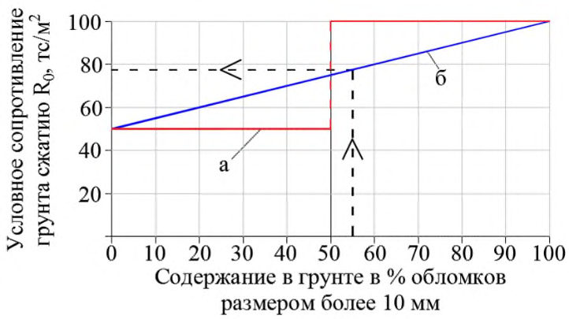
Д.4Крупнообломочные грунты
Д.4.1 Гравийно-галечниковые грунты
Значения 𝑅0 крупнообломочных грунтов изменяются в пределах от 50 до 150 тс/м² в зависимости от крупности и окатанности обломков (галька, щебень, гравий, дресва), вида породы, из которой образовались обломки (кристаллической или осадочной), а также от содержания и прочности глинистого заполнителя.
Примечание - Если крупнообломочные грунты образовались из магматических, метаморфических и осадочных пород, то при сейсмическом микрорайонировании значение 𝑅0 принимают как среднее условных сопротивлений сжатию обломков осадочных и кристаллических пород.
В транспортном строительстве к дресвяной (гравийной) фракции принято относить обломки размером от 2 до 10 мм, к щебенистой (галечниковой) фракции - обломки породы размером от 10 до 200 мм. Размеры частиц скелета существенно влияют на прочность крупнообломочного грунта при сжатии. Для галечникового (щебенистого) грунта осадочных пород условное сопротивление 𝑅0 принимают 100 тс/м² , для гравийного (дресвяного) грунта из тех же пород - 50 тс/м² . Примерно такое же соотношение прочностей принято для галечниковых и гравийных грунтов из кристаллических пород.
На установленной нормами границе (50 % содержания по массе обломков соответствующей фракции) прочность грунта полагают скачкообразно изменяющейся, что является условно принятым соглашением, в первом приближении учитывающим уменьшение прочности грунта с сокращением размера частиц жесткого каркаса. Таким образом, чем сильнее разрушена исходная скальная порода, тем ниже прочность остаточного материала.
Для уточнения прочности грунта используют линейную интерполяцию между значениями 𝑅0 , регламентированными для отдельных сочетаний физических характеристик грунта (пористости, пластичности, крупности зерен, плотности и др.). Интерполяцию используют применительно к определению 𝑅0 для грунтов, состоящих из гравия и гальки, гальки с суглинистым заполнителем, гальки и гравия с суглинистым заполнителем.
Принимают, что упомянутые нормативные значения 𝑅0 относятся к галечниковой (щебенистой) и гравийной (дресвяной) фракциям. Прочность грунта, состоящего из двух фракций, находят линейной интерполяцией в зависимости от содержания в грунте обломков размером более 10 мм (рисунок Д.2).
Рисунок Д.2 -Зависимости 𝑹𝟎 крупнообломочного грунта осадочных пород от содержания обломков размером более 10 мм по нормам проектирования мостов (а) и при сейсмическом микрорайонировании (б)
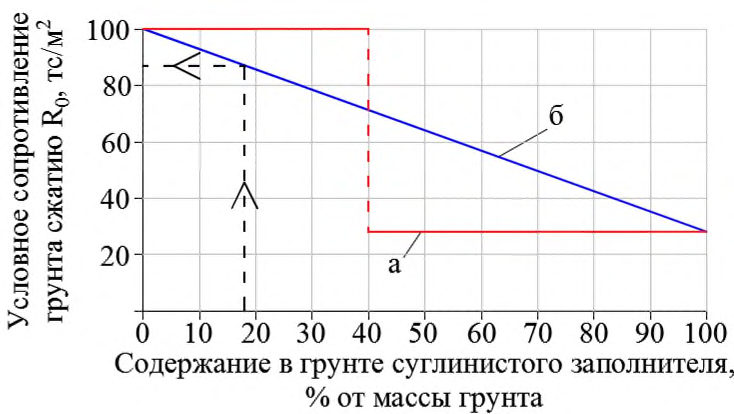
Из сопоставления графиков а) и б) на рисунке Д.2 видно, что относительная погрешность определения 𝑅0 с использованием ступенчатой функции может составлять до 33 % определяемого значения в сторону занижения или завышения прочности.
Пример - Галечниковый грунт осадочной породы содержит 55% по массе частиц размером более 10 мм и 45% частиц гравийной фракции. Требуется найти условное сопротивление сжатию грунта, содержащего обе фракции в данном соотношении.
Величину 𝑅0 находим линейной интерполяцией между крайними значениями 50 тс/м² и 100 тс/м² :
В данном случае прочность, найденная по ступенчатой зависимости, завышена на 23 тс/м² по сравнению с прочностью, определенной линейной интерполяцией.
Д.4.2 Крупнообломочные грунты с глинистым заполнителем
При заполнении пустот между крупными обломками глинистым материалом в количестве более 40 % массы грунта значения 𝑅0 принимают по нормам расчета оснований на прочность, как для глинистого заполнителя. Так, для глинистых грунтов мягкопластичной консистенции R 0 = 10-15 тс/м² , соответственно в разы уменьшается условное сопротивление сжатию крупнообломочного грунта при переходе через упомянутое соотношение глинистого заполнителя и крупных обломков в грунте.
Фактически свойства щебенисто-глинистой массы почти полностью зависят от состава и свойств заполнителя, если содержание крупных обломков в породе менее 10 % (т. е. содержание заполнителя более 90 %). При 35 %-ном - 65 %-ном содержании щебня значительная часть нагрузки при сжатии воспринимается жестким скелетом из крупных обломков, поэтому линейная интерполяция между предельными значениями 𝑅0 , относящимися к прочности жесткого скелета при отсутствии глинистого заполнителя и прочности заполнителя при отсутствии крупных обломков в составе грунта, дает более точные значения прочности крупнообломочных грунтов с глинистым заполнителем.
Пример 1 - Крупнообломочный грунт относится к галечникам из обломков осадочных пород с суглинистым заполнителем до 18 % полутвердой консистенции. Условное сопротивление сжатию жесткого каркаса без суглинистого заполнителя 𝑅0 = 100 тс/м² . Условное сопротивление полутвердого суглинка без учета влияния крупных обломков (гальки) 𝑅0 = 28 тс/м² . Изменение прочности на сжатие галечника с суглинистым заполнителем (суглинка с галькой) принимают по графику (рисунок Д.3).
Рисунок Д.3 -Зависимости прочности галечника при сжатии от содержания суглинистого заполнителя полутвердой консистенции при расчете оснований на прочность (а) и при сейсмическом микрорайонировании (б)
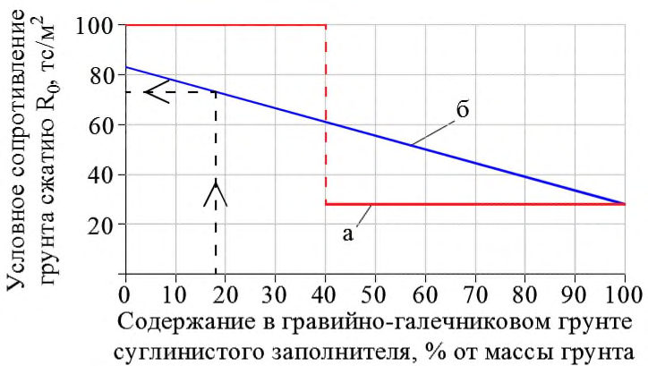
Искомое значение прочности галечника с суглинистым заполнителем:
При расчете оснований на прочность влиянием суглинка в количестве 18 % массы галечника пренебрегают, т. е. прочность галечника считают равной 100 тс/м² , завышая ее на 13 %. При содержании заполнителя более 40 % условное сопротивление 𝑅0 , напротив, будет занижено более чем в два раза.
Пример 2 - Крупнообломочный грунт содержит гальку осадочной породы в количестве 55 % массы грунта и 27 % частиц гравийной фракции. Кроме того, гравийно-галечниковые отложения включают в себя суглинистый заполнитель полутвердой консистенции, составляющий 18 % массы грунта в целом.
Условное сопротивление на сжатие грунта, состоящего из трех фракций, находят линейной интерполяцией (рисунок Д.4) между крайними значениями, соответствующими прочности галечнико-гравийного каркаса ( 𝑅0 = 83 тс/м² ) и суглинистого заполнителя ( 𝑅0 = 28 тс/м² ).
Искомое значение условного сопротивления грунта из трех фракций 𝑅0 = 28 + (83-28)∙82 100 = 73 тс/м² .
При расчете на сжатие оснований статической нагрузкой R 0 рассматриваемого грунта принимают равной 100 тс/м² , так как грунт более чем на 50 % состоит из галечниковой фракции осадочной породы.
Присутствие в грунте гравия и суглинистого заполнителя уменьшает значение 𝑅0 на 27 тс/м² . Таким образом, учет влияния гравия и суглинка с помощью интерполяции позволяет считать, что грунт имеет менее благоприятную характеристику прочности, чем при оценке 𝑅0 с использованием ступенчатой функции.
Оценку 𝑅0 крупнообломочного грунта можно уточнить путем учета гранулометрического состава галечниковой фракции. Принимая значение 𝑅0 = 50 тс/м² для гравия с размером частиц 𝑠 = 10 мм и 𝑅0 = 100 тс/м² для гальки из обломков осадочных пород с размерами частиц 𝑠 = 200 мм, находят зависимость между размером частиц и условным сопротивлением каркаса 𝑅0 = 47,37 + 0,26𝑠 .
Пусть галечниковая фракция состоит из частиц размером от 10 до 20 мм в количестве 5 % массы грунта, размером от 20 до 40 мм в количестве 10 %, размером от 40 до 60 мм в количестве 25 % и размером от 60 до 80 мм в количестве 15 %.
Соответствующее условное сопротивление галечниково-гравийного каркаса 𝑅0 = 57 тс/м² . Условное сопротивление грунта, состоящего из гальки, гравия и суглинка, 𝑅0 = 28 + (57-28)∙82 100 = 52 тс/м² , что существенно меньше, чем для грунта, включающего самую крупную по размерам гальку ( 𝑅0 = 73 тс/м² ).
Рисунок Д.4 -Зависимости условного сопротивления гравийно-галечникового грунта при сжатии от содержания суглинистого заполнителя при расчете основания на прочность (а) и при сейсмическом микрорайонировании (б)
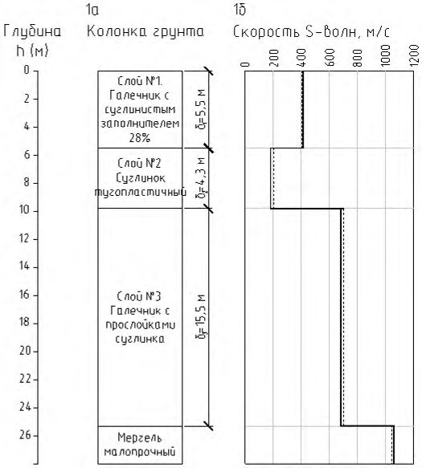
Д.5Скальные грунты в зоне выветривания
Вдоль трасс дорог скальные грунты нередко выходят на земную поверхность, или их кровля располагается на глубине до 10 м от нее. В этих случаях в состав расчетной толщи грунта, сейсмическая жесткость которой учитывается при сейсмическом микрорайонировании сооружений на дорогах, включают верхнюю часть скального массива.
При выполнении СМР участков под объекты транспортного строительства условное сопротивление грунтов сжатию 𝑅0 считают равным пределу прочности грунта на одноосное сжатие 𝑅𝑐 , которое определяют как среднее значение прочности скального грунта по ГОСТ 25100. Идентификацию скальных грунтов в зоне выветривания устанавливают по данным общих инженерно-геологических изысканий.
Условное сопротивление сильновыветрелого слоя, состоящего из более или менее крупных обломков с пустотами, заполненными песчаным и глинистым материалом, находят при СМР, как для крупнообломочного грунта, в зависимости от происхождения породы, крупности и окатанности обломков, количества и свойств глинистого заполнителя с использованием линейных зависимостей между 𝑅0 и физическими характеристиками грунта.
ЕПриложение Е. (справочное)
Сейсмическое микрорайонирование участка строительства виадука
Е.1Исходные данные
Мостовой переход через долину р. Чемитоквадже на Черноморском побережье Северного Кавказа (Краснодарский край) расположен между г. Туапсе и г. Сочи. Приустьевая часть долины р. Чемитоквадже врезана в подстилающие коренные породы примерно на 110 м. Древнее дно долины перекрыто аллювиальными четвертичными отложениями мощностью до 30 м. Крутизна скальных склонов долины достигает 30°-35 ° . Исходная сейсмичность района принята равной 9 баллам по шкале MSK-64.
По данным изысканий, коренные породы в створе мостового перехода представлены окремнелым мергелем. Верхние слои коренной породы трещиноватые, малопрочные с расчетным сопротивлением сжатию 𝑅𝑐 ≈ 1000 тс/м² . Плотность мергеля 2,45 т/м³ .
В средней части перехода кровля мергеля погружается на глубину около 30 м ниже современного дна долины. Инженерно-геологический разрез по оси центральной опоры включает в себя насыпной грунт, слой галечника мощностью 7,5 м, расположенный под ним слой суглинка толщиной 4,3 м и залегающий на кровле мергеля слой галечника мощностью 15,5 м.
Расчетная толща грунта, определяющая сейсмичность площадки центральной опоры виадука, включает в себя два слоя галечника и один слой суглинка (рисунок Е.1). Эти грунты имеют следующие характеристики:
Слой № 1. Галечник из обломков преимущественно осадочных пород с суглинистым заполнителем до 28 %. Нормативная плотность грунта ρ = 2,30 т/м³ . Условное сопротивление сжатию составляющих грунт фракций равно 100 тс/м² (галечник) и 13,5 тс/м² (суглинок).
Условное сопротивление галечника с суглинистым заполнителем 𝑅0 = 75,8 тс/м² .
Слой № 2. Тугопластичный суглинок с гравием осадочных пород до 20 %. Плотность грунта ρ = 1,97 т/м³ . Условное сопротивление сжатию составляющих грунт фракций равно 50 тс/м² (гравий) и 13,5 тс/м² (суглинок).
Условное сопротивление суглинка с гравием 𝑅0 = 20,8 тс/м² .
Слой № 3. Галечник плотностью ρ = 2,30 т/м³ с тонкими прослойками суглинка, составляющими суммарно 6 % мощности слоя № 3. Это позволяет считать слой однородным, пренебрегая прослойками суглинка. Условное сопротивление галечника сжатию 𝑅0 = 100 тс/м² .
Е.2СМР в створе виадука
Сейсморазведка в створе моста выполнялась в целях определения скоростей продольных и поперечных волн в коренной породе и покровных отложениях. Работы осуществлялись вдоль линии длиной 276 пог. м. при наибольшей глубине зондирования 33 м. Регистрация колебаний грунта и предварительная обработка записей проводились с помощью сейсмостанции.
Скорости S-волн в слоях №1-№3 по данным сейсморазведки равны 433, 278 и 680 м/с соответственно. Сейсмические жесткости слоев ρ1𝑉 𝑆1 = 2,30 ∙ 433 = 996 тм 2 /с, ρ2𝑉 𝑆2 = 1,97 ∙ 278 = 548 тм 2 /с, ρ3𝑉 𝑆3 = 2,30 ∙ 680 = 1564 тм 2 /с. По сейсмической жесткости галечник относится к грунтам категории II по сейсмическим свойствам, суглинок - к грунтам категории III. Скорость S-волн в мергеле 1065 м/с. Сейсмическая жесткость коренной породы ρ4𝑉 𝑆4 = 2,45 ∙ 1065 = 2609 т/м² с, т. е. мергель относится к грунтам категории I по сейсмическим свойствам.
При исходной сейсмичности 9 баллов расчетное значение скорости S-волн в грунтах категории III по сейсмическим свойствам уменьшается на 30 % за счет нелинейности деформаций грунта при 9-балльных землетрясениях. Поэтому для дальнейших расчетов скорость S-волн в тугопластичном суглинке принимают равной 0,7·278=195 м/с, сейсмическую жесткость ρ2𝑉 𝑆2 = 1,97 ∙ 195 = 384 тм 2 /с.
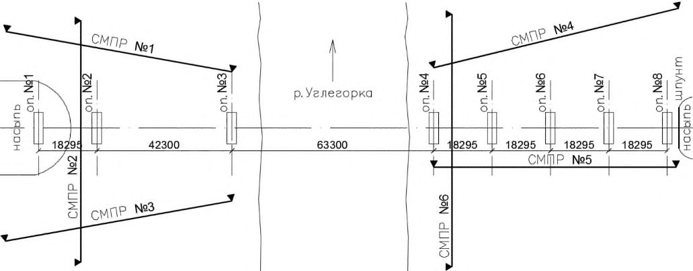
а - колонка грунта; б - графики скорости S-волн: --- по данным сейсморазведки; -------------- по данным расчета
Рисунок Е.1 - Скорости S-волн в грунтах расчетной толщи и в коренной породе
Приращение сейсмичности площадки центральной опоры за счет местных инженерногеологических условий по данным сейсморазведки определяют по формуле
где средневзвешенная жесткость расчетной толщи ρ𝑉 𝑆 = ∑(ρ𝑖𝑉𝑠𝑖 )δ 𝑖 = 996∙5,5+384∙4,3+1564∙15,5
1240 т/(м
Приращение балльности δ𝐼гр = 1,67lg ( 655 1240 ) = -0,5
∑δ𝑖 5,5+4,3+15,5 = 2 ·с), т. е. расчетная толща относится к грунтам категории II по сейсмическим свойствам. балла.
Приращение балльности на основе данных общих инженерно-геологических изысканий оценивают с определением скорости S-волн в зависимости от условного сопротивления грунта сжатию 𝑅0 , средней глубины залегания слоев и поправочных коэффициентов на нелинейность деформирования и обводненность слоев грунта расчетной толщи.
Для слоя № 1 на глубине h1 = 5,75 м от поверхности грунта условное сопротивление сжатию 𝑅0 = 75,8 тс/м² . Поправочный коэффициент на обводненность слоя 𝐾об = 0,9 . Скорость 𝑉𝑆1 = 𝐾об (0,70 + 0,03h1 )(454lg𝑅0 -316) = 0,9(0,70 + 0,03 ∙ 5,75)(454lg75,8 - 316) = 422 м/с. Сейсмическая жесткость 𝜌1𝑉 𝑆1 = 2,30 ∙ 422 = 971 т/(м² ·с).
Для слоя № 2 на глубине h2 = 10,65 м от поверхности грунта условное сопротивление сжатию грунта 𝑅0 = 20,8 тс/м² . Поправочный коэффициент на нелинейность деформирования грунта 𝐾н.д = 0,7 . Скорость 𝑉𝑆2 = 𝐾н.д (0,70 + 0,03h2 )(454lg𝑅0 -316) = 0,7(0,70 + 0,03 ∙ 10,65)(454lg20,8 - 316) = 201 м/с. Сейсмическая жесткость ρ2𝑉 𝑆2 = 1,97 ∙ 201 = 396 т/(м² ·с).
Для слоя № 3 на глубине h3 = 20,55 м от поверхности строительной площадки условное сопротивление грунта сжатию 𝑅0 = 100 тс/м² . Поправочный коэффициент на обводненность слоя 𝐾об = 0,9 . Скорость 𝑉𝑆3 = 𝐾об (0,70 + 0,03h3 )(454lg𝑅0 -316) = 0,9(0,70 + 0,03 ∙ 20,55)(454lg100 - 316) = 701 м/с. Сейсмическая жесткость ρ3𝑉 𝑆3 = 2,30 ∙ 701 = 1612 т/(м² ·с).
Средневзвешенная сейсмическая жесткость расчетной толщи из трех слоев ρ𝑉 𝑆 = ∑(ρ𝑖 𝑉 𝑠𝑖 )δ 𝑖 ∑δ𝑖 = 971∙5,5+396∙4,3+1612∙15,5 5,5+4,3+15,5 = 1266 т/(м² ·с).
Приращение балльности δ𝐼гр = 1,67lg ( 655 1266 ) = -0,5 балла.
Таким образом, при использовании данных сейсморазведки и неинструментального способа СМР получены одинаковые приращения балльности строительной площадки опоры виадука.
По данным общих инженерно-геологических изысканий можно найти скорости S-волн в коренной породе на глубине 28,3 м, соответствующей кровле мергеля, 𝑉𝑆4 = 454lg𝑅0 - 316 = 454lg1000 - 316 = 1046 м/с, что незначительно отличается от скорости, найденной экспериментально ( 𝑉𝑆4 = 1065 м/с ).
ЖПриложение Ж (справочное). Сейсмическое микрорайонирование участка мостового перехода
Мост через р. Углегорка (Сахалинская область) расположен на автомобильной дороге категории III по СП 34.13330. Первоначальный проект моста был разработан в 1993 г. в период действия карты ОСР-78, на которой сейсмичность района строительства моста была принята 7 баллов.
После Нефтегорского землетрясения 1995 г. сейсмичность территории мостового перехода была увеличена до 9 баллов. В связи с этим в 2001 г. была выполнена корректировка проекта. По измененному проекту полная длина моста составила 207,14 м. Мост относится к балочной системе с разрезными на поймах и неразрезным над руслом реки (частично над левобережной поймой) пролетными строениями. Опоры бетонные (железобетонные) с фундаментами в виде свайных ростверков расположены на левобережной и правобережной поймах.
По данным общих инженерно-геологических изысканий, левобережная пойма с поверхности сложена крайне слабыми отложениями (илами, глинистыми грунтами текучей консистенции, заторфованными суглинками). Мощность толщи этих грунтов изменяется от нескольких метров у подошвы береговой террасы до 23 м у русла реки. Под толщей слабых глинистых грунтов на кровле выветрелого аргиллита залегает суглинок с гравием и дресвой.
Инженерно-геологическая обстановка на правобережной пойме сложнее, чем на левом берегу реки. В верхних слоях грунтового массива присутствуют текучие, мягкопластичные и тугопластичные супеси, суглинки и глины с примесью органических веществ. Углы падения слоев локально более крутые, чем на левобережной пойме. Общая мощность покровных отложений, залегающих на кровле выветрелых аргиллитов, местами превышает 25 м.
Неблагоприятные особенности инженерно-геологической обстановки на правобережной пойме созданы деятельностью р. Углегорки и ее правого притока, спускающегося на пойму в створе моста с террасы правого берега.
Русловые процессы в палеоруслах р. Углегорки и ее притока привели к понижению отметок кровли трещиноватого аргиллита, увеличению мощности элювия, эрозии и сносу части коренной породы с выработкой плоского ложа и крутых стенок русел, с последующим накоплением в палеоруслах слабых отложений. В результате аргиллиты и покровные отложения на правобережной пойме имеют быстро изменяющиеся свойства как по глубине разреза, так и в горизонтальных сечениях.
В период строительства с 1994 г. по 2003 г. наблюдались осадка насыпей на подходах к мосту, разрушение глубоким сдвигом правобережного устоя, осадка и крен левобережного устоя, трещины в надземных конструкциях промежуточных опор.
В 2008 г. на объекте выполнялись работы по обследованию конструкций, диагностике причин деформаций сооружения с составлением рекомендаций по мерам стабилизации состояния моста, включая сейсмическое микрорайонирование участка мостового перехода и разработку мер защиты сооружения от землетрясений.
Сейсморазведочные работы включали в себя определение скоростей продольных и поперечных волн по шести сейсмопрофилям (СМПР) общей длиной 552 м. СМПР располагались вдоль и поперек оси моста на площади 16000 м² . Глубина разрезов до 40 м. Скорости волн измерялись с шагом 2 м по глубине разрезов и 10 м по их простиранию. По этим данным построены геофизические разрезы изучаемого массива вдоль и поперек оси моста. На разрезах приведены положение слоев и сейсмические свойства слагающих их грунтов. Положение СМПР в плане показано на рисунке Ж.1.
Рисунок Ж.1 -Положение сейсмопрофилей на участке мостового перехода
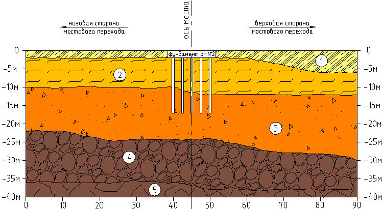
При СМР поправку на грунтовые условия оснований мостовых опор определяют с учетом сейсмической жесткости расчетной толщи грунта. Для фундаментов из свай, столбов и оболочек из состава расчетной толщи исключают залегающие с поверхности неуплотненные насыпные грунты, слои ила, торфа, склонные к разжижению водонасыщенные рыхлые песчаные, а также очень слабые глинистые грунты текучепластичной и текучей консистенции. Под слоем упомянутых отложений располагается верхняя граница расчетной толщи грунта.
Для опор с фундаментами из висячих свай нижняя граница расчетной толщи проходит в уровне нижних концов свай или ниже этого уровня, но не менее 10 м от верхней границы расчетной толщи. Если в инженерно-геологическом разрезе присутствуют линзы или прослойки менее прочного грунта под слоем, в который погружены нижние концы свай, то считают, что нижняя граница расчетной толщи проходит по подошве наиболее заглубленного слабого слоя инженерно-геологического разреза. Во всех случаях нижнюю границу расчетной толщи при проектировании мостовых опор с фундаментами из висячих свай принимают не ниже уровня поверхности, достигнутой при бурении разведочных скважин.
1 - суглинок с торфом (51 ≤ VS ≤ 96 м/с); 2 - суглинок текучий (135 ≤ VS ≤ 173 м/с); 3 - суглинок с гравием и дресвой (225 ≤ VS ≤ 361 м/с); 4 - выветрелый аргиллит (506 ≤ VS ≤ 524 м/с); 5 -трещиноватый аргиллит ( VS = 767 м/с)
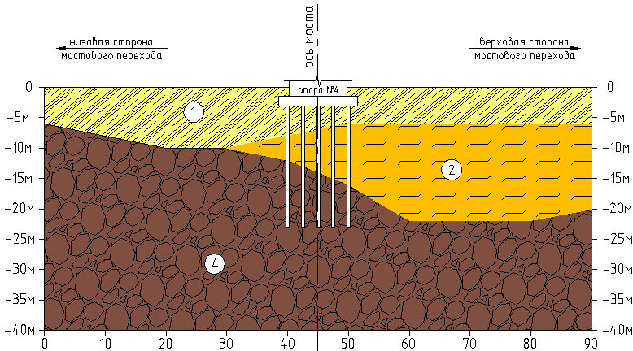
Рисунок Ж.2 - Разрез по сейсмопрофилю № 2
Сваи ростверка опоры № 2 погружены на 17,2 м ниже поверхности строительной площадки (рисунок Ж.2). По данным сейсморазведки, сваи погружены в слой суглинка с гравием и дресвой примерно на 5 м. Кровля выветрелого аргиллита располагается на 8 м ниже отметки погружения свай. Верхняя граница расчетной толщи проходит по поверхности слоя суглинка с гравием и дресвой на глубине 12 м от поверхности строительной площадки, нижняя граница располагается на 10 м глубже, т. е. на глубине 22 м. Средняя плотность грунта расчетной толщи ρ = 1,98 т/м³ , скорость поперечных сейсмических волн в створе опоры № 2 𝑉𝑆 = 235 м/с. Сейсмическая жесткость расчетной толщи ρ𝑉 𝑆 = 1,98 ∙ 235 = 465 т/(м² ·с). Поправка к исходной сейсмичности за счет грунтовых условий δ𝐼 = 1,67lg ( 655 ρ𝑉𝑆 ) = 0,2 балла. С учетом нелинейности деформаций грунта 𝑉𝑆 = 0,7 · 235 = 165 м/с, δ𝐼 = 0,5 балла.
Для опор с фундаментами из свай-стоек нижнюю границу расчетной толщи принимают в уровне кровли скальной породы или другого малосжимаемого грунта (глины твердой консистенции со статическим модулем деформации 𝐸 > 50 МПа, крупнообломочных отложений с песчаным заполнителем или содержанием не более 40 % глинистого заполнителя), на который опираются сваи-стойки. Если мощность неконсолидированного слоя оказывается меньше 10 м, то в состав расчетной толщи включают часть скального массива или другого малосжимаемого грунта, с тем чтобы общая мощность расчетной толщи была не менее 10 м.
Опора № 4 имеет фундамент из свай-стоек, объединенных поверху железобетонной плитой (рисунок Ж.3). Верхняя граница расчетной толщи совпадает с кровлей выветрелого аргиллита, поскольку залегающие выше глинистые грунты имеют текучую консистенцию. Уровень кровли аргиллита принимают по вертикальной оси фундамента, т. е. в данном случае на отметке -14,0 м относительно поверхности строительной площадки. Нижнюю границу расчетной толщи принимают расположенной на 10 м ниже, т. е. на отметке -24,0 м относительно поверхности строительной площадки.
По данным общих изысканий и сейсморазведки, плотность аргиллита ρ = 2,30 т/м³ , скорость поперечных сейсмических волн в расчетной толще в створе опоры № 4 𝑉𝑆 = 488 м/с. Сейсмическая жесткость расчетной толщи ρ𝑉 𝑆 = 2,30 ∙ 488 = 1122 т/(м² ·с). Поправка к исходной сейсмичности за счет грунтовых условий δ𝐼гр = 1,67lg ( 655 ρ𝑉𝑆 ) = -0,4 балла.
1 -текучий суглинок с торфом (91 ≤ VS ≤ 120 м/с); 2 -текучие супесь и суглинок ( VS = 170 м/с); 4 - выветрелый аргиллит (448 ≤ VS ≤ 565 м/с)
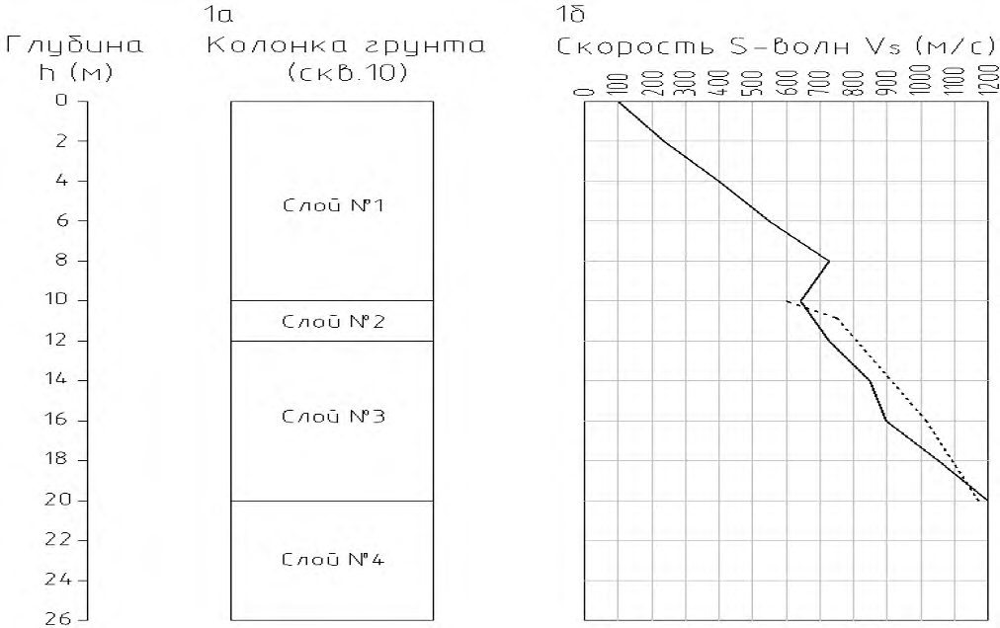
Рисунок Ж.3 -Разрез по сейсмопрофилю № 6
ИПриложение И (справочное). Сейсмическое микрорайонирование участка железнодорожного вокзала
Железнодорожный вокзал в г. Сочи (Краснодарский край) построен в 1952 г. Комплекс разновысоких зданий вокзала занимает площадку размерами 145×52 м в плане. Высота двух зданий (административного корпуса и здания билетных касс) около 10 м, центрального корпуса - 20 м, башни - более 45 м.
Вокзал сооружен на спланированном участке склона. Фундаменты под кирпичными стенами устроены в виде бетонных лент шириной по подошве от 1,2 до 4,0 м. Глубина заложения фундаментов от естественной поверхности грунта колеблется от 1,2 до 7,2 м.
Под подошвой фундаментов залегает глина от тугопластичной до полутвердой консистенции с включением до 20 % дресвы и щебня аргиллита и песчаника. Суммарная мощность слоев глины под зданием административного корпуса составляет от 10 до 20 м. Под фундаментами других зданий мощность покровных отложений уменьшается до 10-15 м и менее.
На участке вокзала коренная порода представлена аргиллитом. Верхний слой аргиллита толщиной около 3 м разрушен до состояния глыб, дресвы и щебня с глинистым заполнителем. Плотность грунта - 2,08 т/м³ , модуль деформации - 15-24 МПа, условное сопротивление 𝑅0 при сжатии - 20-25 тс/м² .
Ниже залегает слой аргиллита низкой прочности с плотностью 2,10 т/м³ , модулем деформации 30 МПа, условным сопротивлением 𝑅0 при сжатии 30-35 тс/м² . Мощность этого слоя приблизительно 2 м.
Еще ниже располагается трещиноватый аргиллит с плотностью в кровле 2,35 т/м³ , модулем деформации 35-40 МПа, условным сопротивлением 𝑅0 при сжатии, равным 40-50 тс/м² .
За период с 1952 г. по 1990 г. в стенах зданий появились многочисленные трещины преимущественно вертикального направления. Ширина раскрытия трещин в отдельных местах достигала 10 мм. Трещины появились из-за неодинакового давления на грунт разновысоких частей зданий и переменной мощности сжимаемой толщи глинистых грунтов. К 1994 г. разность осадок стены вокзала со стороны перрона достигла 169 мм.
При проектировании вокзала предполагалось, что сила максимального возможного землетрясения в г. Сочи не превышает 7 баллов. В связи с этим в проекте были предусмотрены только минимальные антисейсмические мероприятия в виде поясов из железобетона в кирпичных стенах центрального и административного корпусов, а также в здании билетных касс.
В связи с разрушительными землетрясениями на Кавказе в Армении (1988 г.) и Грузии (1991 г.) сейсмическая опасность для г. Сочи повышена до 9 баллов применительно к наиболее крупным объектам на железных и автомобильных дорогах, включая выдающиеся памятники архитектуры, к которым относится железнодорожный вокзал в г. Сочи.
Неудовлетворительное состояние кирпичной кладки стен, слабое армирование железобетонных конструкций не соответствовали требованиям безопасной эксплуатации вокзала в районе высокой сейсмичности. В связи с этим были выполнены специальные исследования, включая сейсмическое микрорайонирование места расположения вокзала, и разработаны рекомендации по антисейсмическому усилению несущих и декоративных конструкций.
Сейсмические свойства грунтов под зданием вокзала на глубину до 20 м определены при выполнении геофизических работ на пяти профилях общей длиной 344 м. Мощности слоев и скорости продольных и поперечных сейсмических волн выявлялись с шагом в горизонтальном направлении 10 м.
Сейсмичность площадок зданий вокзала определялась с осреднением сейсмических свойств расчетной толщи по территории зданий, разделенных антисейсмическими (деформационными) швами. Характеристики расчетной толщи устанавливались в зависимости от сейсмических свойств толщи мощностью 10 м, расположенной ниже отметок заложения фундаментов. Мощность слоев грунта в пределах расчетной толщи определялась по данным инженерно-геологических разрезов, соответствующих центральным осям зданий.
В изученном массиве поперечные волны распространялись со следующими скоростями: в полутвердых и тугопластичных глинах - от 270 до 300 м/с, в аргиллите разной степени выветрелости - от 720 до 850 м/с.
Грунты с менее благоприятными сейсмическими свойствами расположены под зданием административного корпуса. Среднее значение скорости 𝑉𝑆 = 270 м/с, плотность глины ρ = 1,92 т/м³ , мощность расчетной толщи - 10 м, сейсмическая жесткость грунта ρ𝑉 𝑆 = 518 т/м² с, поправка к исходной сейсмичности на грунтовые условия δ𝐼 = 1,67lg 655 518 ≈ 0,2 балла. С учетом нелинейности деформаций грунта при землетрясениях силой 9 баллов 𝑉𝑆 = 0,7 · 270 = 189 м/с, δ𝐼 = 0,4 балла.
По данным сейсморазведки, на участке работ по капитальному ремонту вокзала выделены четыре микрозоны. Поправки на грунтовые условия в микрозонах изменялись в интервале значений от 0,3 до 0,4 балла.
КПриложение К. (справочное)
Сейсмическое микрорайонирование оползневого склона
К.1Исходные данные
СМР оползневого склона показано на примере обхода г. Сочи. Строительство обхода г. Сочи (Краснодарский край) началось в 1988 г. В 1992 г. работы на участке от ПК45 до ПК134 были приостановлены. На первом пусковом комплексе до ПК45 работы продолжались.
В феврале 2001 г. в г. Сочи выпали обильные осадки в объеме трехмесячной нормы. На склоне Раздольненской котловины (ПК43-ПК48), подрезанном в 1991-1992 гг. выемкой глубиной до 8 м, под влиянием осадков сформировался оползень. Оползневая масса состояла из сдвинутых слоев полутвердой глины, дресвы и щебня, блоков и пакетов аргиллита. Мощность оползневого массива в отдельных местах достигала 12-15 м, высота стенки отрыва в тыльной части оползня - 9-10 м. Средняя ширина оползневого тела составила около 400 м, длина примерно 300 м, объем сместившейся породы - около 1 млн м³ .
В связи с возникшим оползнем потребовалась корректировка проекта строительства автомобильной дороги. Дополнительно были выполнены бурение разведочных скважин через тело оползня и вне оползневого массива, отбор образцов грунта из тела оползня и ниже поверхности скольжения, лабораторное определение физико-механических свойств грунтов, сейсмическое микрорайонирование участка оползневого склона.
На основании полевых и лабораторных работ были установлены следующие свойства грунтов на склоне Раздольненской котловины (рисунок К.1, а).
Слой № 1. В разной степени дезинтегрированные блоки и пакеты коры выветривания, составляющие тело оползня. Толщина слоя 𝛿1 = 10 м от поверхности склона. По поверхности скольжения угол внутреннего трения φ = 8° , сцепление 𝑐 = 1,2 тс/м² .
Слой № 2. Аргиллит низкой прочности с прослоями малопрочных песчаников (3 % - 5 %). Толщина слоя 𝛿2 = 2,0 м. Нормативная плотность 𝜌 = 2,15 т/м³ . По ГОСТ 25100 предел прочности грунта 𝑅c на одноосное сжатие изменяется в интервале от 100 до 300 тс/м² . Для слоя в среднем было принято условное сопротивление сжатию 𝑅0 = 𝑅c = 100+300 2 = 200 тс/м² .
Слой № 3. Аргиллит пониженной прочности с прослоями маломощных песчаников (до 5 %). Нормативная плотность ρ = 2,20 т/м³ . Толщина слоя 𝛿3 = 8,0 м. По ГОСТ 25100 предел прочности грунта на одноосное сжатие лежит в интервале значений от 300 до 500 тс/м² . Для средней глубины залегания слоя h = 16 м было принято 𝑅0 = 𝑅c = 300+500 2 = 400 тс/м² . У нижней границы слоя на глубине 20 м 𝑅0 = 𝑅c = 500 тс/м² .
Слой № 4. Малопрочный аргиллит, близкий по свойствам аргиллиту пониженной прочности. Слой заглублен на 20-26 м от поверхности склона. Прочность на одноосное сжатие 𝑅c и условное сопротивление сжатию 𝑅0 были приняты равными 500 тс/м² .
К.2Сейсмическое микрорайонирование
Суммарная длина геофизических профилей вдоль и поперек тела оползня 568 м. Скорости сейсмических волн вычислялись на глубину до 26 м от поверхности склона с шагом 2 м по глубине разрезов. Изменение скорости поперечных волн 𝑉 𝑠 по глубине разреза показано на рисунке К.1, б.
На глубине 10 м отмечен локальный минимум скорости S-волн в аргиллите низкой прочности, что объясняется повышенной трещиноватостью породы вблизи поверхности сдвига. Из рисунка К.1, б, видно, что выше и ниже отметки 10 м скорость 𝑉𝑆 увеличивается в связи с удалением от поверхности скольжения.
В интервале глубин от 10 до 20 м скорость 𝑉𝑆 увеличивается с 667 до 1200 м/с из-за уменьшения трещиноватости коренной породы. Ниже отметки 20 м скорость S-волн стабилизируется, достигнув своего максимума 1200 м/с. Таким образом, мощность зоны выветривания аргиллита на склоне составляет 20 м.
При расчете сейсмоустойчивости склонов сейсмичность участка относят к массиву породы мощностью 10 м, относительно которого проверяют возможность скольжения вышележащих отложений. В данном случае необходимо учитывать сейсмические свойства аргиллита низкой и пониженной прочности (слои № 2 и № 3).
Для слоя № 2 средняя скорость S-волн на глубине 11 м 𝑉𝑆2 = 698 м/с, сейсмическая жесткость ρ2𝑉 𝑆2 = 2,15 ∙ 698 = 1591 т/(м² ·с). Для слоя № 3 на глубине 16 м скорость 𝑉𝑆3 = 897 м/с, сейсмическая жесткость ρ3𝑉 𝑆3 = 2,20 ∙ 897 = 1973 т/(м² ·с).
а - колонка грунта (скв. 10); б - графики скорости S-волн: ---- по данным сейсморазведки; ------------- по расчету с использованием данных общих инженерно-геологических изысканий Рисунок К.1 -Изменение скорости S-волн по глубине инженерно-геологического разреза
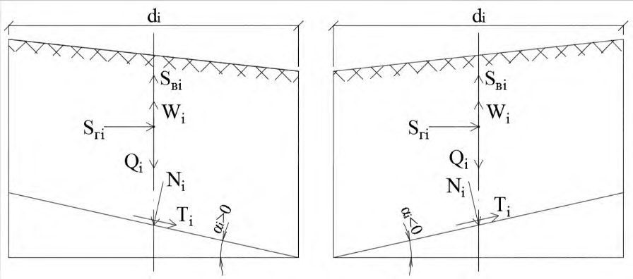
Приращение сейсмичности за счет местных инженерно-геологических условий δ𝐼гр = 1,67lg ( 655 ρ𝑉 𝑠 ) = 1,67lg ( 655 1897 ) = -0,8 балла.
По данным общих инженерно-геологических изысканий, скорость S-волн находят в зависимости от условного сопротивления грунта сжатию 𝑅0 и глубины залегания слоя h .
Для слоя № 2 на глубине h = 11 м условное сопротивление сжатию 𝑅0 = 200 тс/м² . Скорость S-волн 𝑉𝑆 = (0,70 + 0,03h)(454lg𝑅0 -316) = 750 м/с. Сейсмическая жесткость слоя ρ𝑉 𝑆 = 2,15 ∙ 750 = 1612 т/(м² ·с).
Для слоя № 3 на глубине 16 м условное сопротивление сжатию 𝑅0 = 400 тс/м² . Скорость S-волн 𝑉 𝑆 = (0,70 + 0,03h)(454lg𝑅0 -316) = 1021 м/с. Сейсмическая жесткость слоя ρ𝑉 𝑆 = 2,20 ∙ 1021 = 2246 т/(м² ·с).
Сейсмическая жесткость слоев расчетной толщи ρ𝑉 𝑆 = ∑(ρ𝑖𝑉𝑠𝑖 )δ 𝑖 ∑δ𝑖 = 1612∙2+2246∙8 2+8 = 2119 т/(м² ·с).
Приращение балльности за счет местных инженерно-геологических условий δ𝐼гр = 1,67lg ( 655 ρ𝑉 𝑠 ) = 1,67lg ( 655 2119 ) = -0,85 балла.
Приращения сейсмичности ложа оползня, найденные по данным сейсморазведки (δ𝐼гр = -0,8 балла) и материалам общих инженерно-геологических изысканий (δ𝐼гр = -0,85 балла) практически совпадают.
ЛПриложение Л (справочное). Методика расчета склонов на сейсмоустойчивость
Расчет сейсмоустойчивости склонов имеет некоторые особенности, отличающие его от расчета склонов на устойчивость с учетом исключительно гравитационных и гидростатических сил. К этим особенностям относятся:
- появление дополнительных (сейсмических) сил, сдвигающих покровные отложения относительно коренной породы и изменяющих давление оползневого тела на основание;
- изменение физико-механических свойств грунта при сейсмическом воздействии;
- снижение требований к запасу устойчивости склона до 𝐾уст = 1,2 , учитывающее кратковременность действия сейсмических сил.
Сущность приведенной ниже методики состоит в делении оползневого тела на несколько отсеков с вертикальными боковыми гранями. Силы, действующие на противоположные боковые грани каждого отсека, считаются одинаковыми и при расчете устойчивости оползневого тела не учитываются.
На каждый отсек оползневого тела в его центре тяжести действуют активные силы (веса 𝑄𝑖 , гидростатического взвешивания 𝑊𝑖 , горизонтальная 𝑆г𝑖 и вертикальная 𝑆в𝑖 силы инерции). Эти силы вызывают нормальное к подошве отсека давление 𝑁𝑖 и сдвигающее усилие 𝑇𝑖 , касательное к линии скольжения. Схемы сил, приложенных в центрах тяжести отсеков и по их подошвам, показаны на рисунке Л.1.
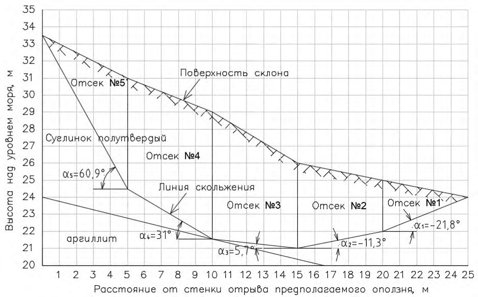
- а - отсек располагается в пределах оползающей части склона;
- б - отсек находится на удерживающей оползень части склона
Рисунок Л.1 -Схемы сил в границах выделенного отсека оползневого тела
Коэффициент устойчивости отсека с номером 𝑖 и размером 1 м из плоскости продольного сечения тела оползня определяется как отношение суммы сил трения и сцепления, удерживающих отсек от сдвига по контакту с подстилающей породой, к величине сдвигающих сил (проекции внешних сил на касательную к линии скольжения), т. е.
где 𝑁𝑖 - проекция активных сил на нормаль к линии сдвига; φ𝑖 - нормативный угол внутреннего трения; 𝑐𝑖 - нормативное сцепление; 𝑙 𝑖 - длина подошвы отсека;
𝑇𝑖 - проекция активных сил на касательную к линии сдвига.
Для нахождения коэффициента устойчивости проверяемого массива, состоящего из 𝑛 отсеков, необходимо суммировать удерживающие и сдвигающие силы вдоль линии сдвига по формуле
Нормальная к линии сдвига составляющая активных сил 𝑁𝑖 зависит от веса отсека 𝑄𝑖 , силы гидростатического взвешивания 𝑊𝑖 , горизонтальной 𝑆г𝑖 и вертикальной 𝑆в𝑖 сейсмических сил, угла 𝛼𝑖 падения линии сдвига. Последний принимают положительным в пределах сползающей части склона и отрицательным для удерживающей части. 𝑁𝑖 определяют по формуле
Сила гидростатического взвешивания зависит от уровня воды в грунте и объема скелета грунта ниже этого уровня, составляя некоторую долю от веса грунта отсека 𝑊𝑖 = 𝐾взв,𝑖𝑄𝑖 , где 𝐾взв,𝑖 - коэффициент гидростатического взвешивания 𝑖 -го отсека.
Вертикальная сейсмическая сила 𝑆в𝑖 зависит от ускорения колебаний 𝑎в центра масс (тяжести) выделенного отсека в вертикальном направлении. Эта сила может быть найдена по формуле 𝑆в𝑖 = 𝑎в g 𝑄𝑖 , где g - ускорение свободного падения. Следовательно, сила 𝑁𝑖 определяется формулой
При вертикальном давлении от веса грунта на единицу площади горизонтальной проекции подошвы отсека 𝑞𝑖 = 𝑄𝑖 𝑑𝑖 и усилии среза в горизонтальной плоскости от сейсмической силы 𝑠𝑖 = 𝑆 г𝑖 𝑑𝑖
После замены величины 𝑑𝑖 произведением 𝑙𝑖cos𝛼𝑖 получают для определения сил, удерживающих отсек от сдвига, формулу
Касательная составляющая активных сил 𝑇𝑖 зависит от веса отсека 𝑄𝑖 , силы гидростатического взвешивания 𝑊𝑖 , вертикальной 𝑆в𝑖 и горизонтальной 𝑆г𝑖 сейсмических сил, а также от угла падения линии сдвига 𝛼𝑖 . Величину 𝑇𝑖 определяют по формуле
Произведя замены 𝑆в𝑖 = 𝑎в 𝑔 𝑄𝑖 , 𝑄𝑖 = 𝑞𝑖𝑑𝑖 , 𝑆г𝑖 = 𝑠𝑖 𝑑𝑖 , 𝑊𝑖 = 𝐾взв,𝑖𝑄𝑖 и 𝑑𝑖 = 𝑙𝑖𝑐𝑜𝑠𝛼𝑖 , получают
Согласно исходной зависимости (Л.2) и полученным выражениям для удерживающих (Л.6) и сдвигающих (Л.8) сил коэффициент сейсмоустойчивости выделенного массива грунта определяют по формуле
где 𝑞𝑖 - вертикальное давление от веса грунта на единицу площади горизонтальной проекции подошвы отсека, тс/м² ; 𝑠𝑖 - усилие сдвига в горизонтальной плоскости в уровне подошвы отсека от сейсмической нагрузки, тс/м² ; 𝑐𝑖 -нормативное сцепление между проверяемым на сдвиг массивом грунта и подстилающей породой, тс/м² ; φ𝑖 - нормативный угол внутреннего трения грунта по поверхности сдвига, град; 𝑎в - модуль ускорения колебаний центра масс отсека в вертикальном направлении, м/с 2 ; g - ускорение свободного падения, м/с 2 ; α𝑖 - угол падения подошвы отсека, град.
При отсутствии сил гидростатического взвешивания коэффициент сейсмоустойчивости склона определяют по формуле
Согласно методике расчета по предельным состояниям давление от веса грунта следует определять с учетом коэффициентов перегрузки (надежности по нагрузке), которые могут быть больше или меньше единицы в зависимости от того, в какой части массива (с падением подошвы отсека в сторону предполагаемого сдвига грунта или ее падением в противоположную сторону) находится данный отсек.
Силы, препятствующие сдвигу частиц грунта при прохождении сейсмических волн, могут существенно изменяться, вплоть до полного исчезновения, после чего наступает разжижение грунта, сопровождаемое образованием потоков разжиженных отложений.
На основании натурных и экспериментальных данных при расчете склонов на сейсмоустойчивость следует уменьшать расчетное сопротивление грунтов сдвигу по сравнению с расчетами на статические нагрузки.
При проектировании объектов транспортного строительства в сейсмических районах принято уменьшать нормативный угол внутреннего трения грунта φ на 1,5°; 3,0° и 6,0° при расчетной сейсмичности 7, 8 и 9 баллов соответственно. Одновременно снижается значение нормативного удельного сцепления грунта 𝑐 на 10 %, 20 % и 40 % по сравнению с расчетами на основное сочетание нагрузок.
При ускорении колебаний расчетной толщи грунта, отличающемся от приведенных значений, снижение φ и 𝑐 находят с помощью линейной интерполяции.
Пример - Проверяемый на сейсмоустойчивость участок склона вблизи поверхности сложен суглинком полутвердой консистенции с нормативными плотностью 1,96 т/м³ , углом внутреннего трения φ = 20° и удельным сцеплением 𝑐 = 2,5 тс/м² . Суглинок подстилается аргиллитом пониженной прочности. По данным обследований, на склоне не замечены следы современных подвижек.
Возможная линия сдвига в слое суглинка принята в виде ломаной, а тело предполагаемого оползня состоящим из пяти сегментов. Горизонтальная проекция линии сдвига имеет длину 25 м (рисунок Л.2).
Значения тригонометрических функций угла падения 𝛼 подошвы отсеков приведены в таблице Л.1.
Таблица Л.1 Значения тригонометрических функций угла падения подошвы отсеков
| Номер | Угол падения подошвы отсека α , град | sinα | cosα | sinα ∙ cosα | cos 2 α |
|---|---|---|---|---|---|
| отсека | |||||
| 1 | -21,8 | -0,37 | 0,93 | -0,34 | 0,86 |
| 2 | -11,3 | -0,19 | 0,98 | -0,19 | 0,96 |
|---|---|---|---|---|---|
| 3 | 5,7 | 0,10 | 0,99 | 0,10 | 0,98 |
| 4 | 31,0 | 0,51 | 0,86 | 0,44 | 0,74 |
| 5 | 60,9 | 0,87 | 0,49 | 0,43 | 0,24 |
Коэффициент сейсмоустойчивости склона определяют по формуле (Л.10). В данной формуле величина 𝑞𝑖 (вертикальное давление от веса грунта на единицу площади горизонтальной проекции подошвы 𝑖 -го отсека) определяется по нормативной плотности суглинка ρ = 1,96 т/м³ с учетом коэффициента надежности по нагрузке 𝑛 = 0,9 для отсеков № 1, 2 и 𝑛 = 1,2 для отсеков № 3, 4, 5. Весовые характеристики отсеков и давление от веса грунта на их подошву приведены в таблице Л.2.
В таблице Л.2 также приведены усилия горизонтального среза 𝑆𝑖 от веса отсеков при уточненной сейсмичности района строительства 8 баллов. Усилия среза определяются по формуле 𝑆𝑖 = 𝐾с𝑄𝑖 , где 𝐾с = 0,05 -коэффициент сейсмичности, равный расчетному значению амплитуды горизонтальных ускорений грунта в центре масс отсека, выраженный в долях ускорения свободного падения. Коэффициент 𝐾с принят с учетом влияния на ускорения колебаний центра масс сейсмических свойств грунта, заглубления центра масс оползневого тела относительно поверхности склона и возможных неупругих деформаций покровных отложений.
Таблица Л.2 Вертикальное давление грунта и силы горизонтального сдвига в уровне подошвы отсеков
| Номер отсека | Площадь сечения отсека 𝐹 𝑖 , м² | Вес отсека 𝑄 𝑖 , тс | Давление от веса отсека на его подошву 𝑞 𝑖 , тс/м² | Усилие горизонтального сдвига в уровне подошвы отсека от сейсмической нагрузки 𝑆 𝑖 , тс | Напряжение в грунте при сдвиге 𝑠 𝑖 , тс/м² |
|---|---|---|---|---|---|
| 1 | 7,5 | 13,2 | 2,64 | 0,66 | 0,13 |
| 2 | 20,0 | 35,3 | 7,06 | 1,76 | 0,35 |
| 3 | 31,2 | 73,4 | 14,68 | 3,67 | 0,73 |
| 4 | 35,0 | 83,3 | 16,66 | 4,16 | 0,83 |
| 5 | 16,2 | 38,1 | 7,62 | 1,90 | 0,38 |
Напряжение сдвига в грунте в уровне подошвы отсеков вычисляют по формуле
где 𝑏 = 1 м - размер отсека из плоскости продольного сечения склона; 𝑑𝑖 = 5 - ширина отсека в горизонтальном направлении в плоскости чертежа (рисунок Л.2).
Рисунок Л.2 -Положение предполагаемой поверхности сдвига в слое суглинка
Нормальное напряжение 𝑁𝑖 𝑏𝑙 𝑖 на предполагаемой поверхности сдвига определяют в зависимости от вертикального давления 𝑞𝑖 и напряжений от вертикальной и горизонтальной сейсмической нагрузки в уровне подошвы 𝑖 -го отсека. Результаты вычислений приведены в таблице Л.3 при значении 𝑎в g = 0,1 , принятом без учета неупругих деформаций грунта для повышения надежности оценки сейсмоустойчивости склона.
Таблица Л.3 Нормальные напряжения на поверхности сдвига
| Номер отсека | Напряжение от веса грунта 𝑞 𝑖 cos 2 𝛼 𝑖 , тс/м² | Напряжение от вертикальной составляющей сейсмической нагрузки - 𝑎 в 𝑔 𝑞 𝑖 cos 2 𝛼 𝑖 , тс/м² | Напряжение от горизонтальной составляющей сейсмической нагрузки -𝑠 𝑖 sin𝛼 𝑖 · cos𝛼 𝑖 , тс/м² | Суммарное напряжение от веса грунта и сейсмической нагрузки 𝑁 𝑖 𝑏𝑙 𝑖 , тс/м² |
|---|---|---|---|---|
| 1 | 2,27 | -0,23 | 0,04 | 2,08 |
| 2 | 6,78 | -0,68 | 0,07 | 6,17 |
| 3 | 14,39 | -1,44 | -0,07 | 12,88 |
| 4 | 12,33 | -1,23 | -0,13 | 10,97 |
| 5 | 1,83 | -0,18 | -0,16 | 1,49 |
Касательные напряжения на поверхности сдвига зависят от веса грунта оползневого тела и сил инерции от его массы, действующих в вертикальном и горизонтальном направлениях. Касательные напряжения приведены в таблице Л.4.
| Номер отсека | Касательные напряжение от веса грунта 𝑞 𝑖 sin𝛼 𝑖 · cos𝛼 𝑖 , тс/м² | Касательные напряжения от вертикальной составляющей сейсмической нагрузки - 𝑎 в 𝑔 𝑞 𝑖 sin𝛼 𝑖 · cos𝛼 𝑖 , тс/м² | Касательные напряжения от горизонтальной составляющей сейсмической нагрузки 𝑠 𝑖 cos 2 𝛼 𝑖 , тс/м² | Суммарные касательные напряжения сдвига 𝑇 𝑖 𝑏𝑙 𝑖 , тс/м² |
|---|---|---|---|---|
| 1 | -0,90 | 0,09 | 0,11 | -0,70 |
| 2 | -1,34 | 0,13 | 0,34 | -0,87 |
| 3 | 1,47 | -0,15 | 0,71 | 2,03 |
| 4 | 7,33 | -0,73 | 0,61 | 7,21 |
| 5 | 3,28 | -0,33 | 0,09 | 3,04 |
Найденные нормальные и касательные напряжения на поверхности сдвига позволяют определить силы, удерживающие и сдвигающие выделенный массив грунта. При определении удерживающих сил угол внутреннего трения φ = 20° уменьшают на 3° , удельное сцепление снижают на 20 %. При оценке устойчивости склона принимают φр = 17° и 𝑐р = 0,8 ∙ 2,5 = 2,0 тс/м² . Расчетные значения удерживающих и сдвигающих сил приведены в таблице Л.5. Сумма удерживающих сил 𝑆уд = 119,88 тс, сумма сдвигающих сил 𝑆сд = 76,76 тс.
Таблица Л.5 Распределение сил трения, сцепления и сдвига вдоль линии скольжения при 𝛗р = 𝟏𝟕° ( 𝐭𝐠𝛗р = 𝟎, 𝟑𝟎𝟔 ) и 𝒄р = 𝟐, 𝟎 тс/м²
| Номер отсека | Ширина отсека 𝑑 𝑖 , м | Длина отрезка сдвига 𝑙 𝑖 , м | Силы трения | Силы трения | Силы сцепления | Силы сцепления | Силы сдвига | Силы сдвига |
|---|---|---|---|---|---|---|---|---|
| Номер отсека | Ширина отсека 𝑑 𝑖 , м | Длина отрезка сдвига 𝑙 𝑖 , м | Погонные 𝑁 𝑖 𝑙 𝑖 tgφ 𝑖 , тс/м | На отсек 𝑁 𝑖 tgφ 𝑖 , тс | Погонные 𝑐 𝑖 , тс/м | На отсек 𝑐 𝑖 𝑙 𝑖 , тс | Погонные 𝑇 𝑖 𝑙 𝑖 , тс/м | На отсек 𝑇 𝑖 , тс |
| 1 | 5,0 | 5,4 | 0,64 | 3,46 | 2,0 | 10,80 | -0,70 | -3,78 |
| 2 | 5,0 | 5,1 | 1,89 | 9,64 | 2,0 | 10,20 | -0,87 | -4,44 |
| 3 | 5,0 | 5,0 | 3,94 | 19,70 | 2,0 | 10,00 | 2,03 | 10,15 |
| 4 | 5,0 | 5,8 | 3,36 | 19,49 | 2,0 | 11,60 | 7,21 | 41,82 |
| 5 | 5,0 | 10,2 | 0,45 | 4,59 | 2,0 | 20,40 | 3,04 | 31,01 |
Коэффициент устойчивости склона при землетрясении силой 8 баллов 𝐾уст = 𝑆уд 𝑆сд = 119,88 76,76 =
1,56 > 1,20 , т. е. склон в природном состоянии имеет достаточный запас сейсмоустойчивости.